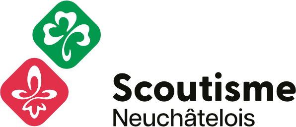

<!doctype html>
<html lang="fr">
<head>
<meta charset="utf-8">
<title>Schéma d'encadrement — Groupe scout</title>
<meta name="viewport" content="width=device-width, initial-scale=1, viewport-fit=cover">
<link rel="preconnect" href="https://fonts.googleapis.com">
<link rel="preconnect" href="https://fonts.gstatic.com" crossorigin>
<link rel="stylesheet" href="https://fonts.googleapis.com/css2?family=Caveat:wght@400;700&family=Kalam:wght@400;700&family=Space+Grotesk:wght@400;500;600;700&display=swap">
<style>
/* ====== Tokens — papier / gouache ====== */
:root {
  --paper-1: #fcf9f1;
  --paper-2: #fcf9f1;
  /* Encre légèrement adoucie : moins dur qu'un noir pur, donne un rendu
     plus illustratif/cartoonesque sans sacrifier la lisibilité. */
  --ink: #2c2a25;
  --ink-2: #524d44;
  --ink-3: #87806f;

  --red: #e54b3f;
  --green: #3eb371;
  --blue: #4f8fd6;
  --yellow: #f5c443;
  --pink: #f2b6b6;

  --line: rgba(33, 32, 29, 0.9);

  --font-hand-big: "Caveat", "Comic Sans MS", cursive;
  --font-hand: "Kalam", "Caveat", cursive;
  --font-sans: "Space Grotesk", ui-sans-serif, system-ui, sans-serif;

  --shadow-hard: 6px 6px 0 var(--ink);
  --shadow-hard-sm: 3px 3px 0 var(--ink);
  --border-thick: 2.5px;
  --border-thin: 2px;
}

* { box-sizing: border-box; }
html, #root { height: 100%; margin: 0; }
/* `100dvh` (dynamic viewport height) suit la hauteur visible quand la barre
   d'adresse mobile se montre/cache, contrairement à `100vh` qui reste fixé
   à la hauteur "URL bar visible" et déborde vers le bas.
   Le padding `safe-area-inset-*` empêche la toolbar de passer sous le notch
   et le bas de tomber sous le home-indicator (iOS). Sans `viewport-fit=cover`
   dans la meta viewport, ces env() retournent 0 — donc aucun effet sur les
   écrans non concernés. */
body {
  margin: 0;
  height: 100vh;
  height: 100dvh;
  padding: env(safe-area-inset-top) env(safe-area-inset-right) env(safe-area-inset-bottom) env(safe-area-inset-left);
  font-family: var(--font-sans);
  color: var(--ink);
  font-size: 14px;
  line-height: 1.5;
  -webkit-font-smoothing: antialiased;
  overflow: hidden;
  /* Fond uni clair (texture pointillée retirée pour un rendu plus net). */
  background-color: var(--paper-1);
}
button { font: inherit; color: inherit; cursor: pointer; }

/* ====== Plein écran ====== */
/* Le fond papier-mouchté est porté par `body` pour couvrir aussi la safe-area
   (notch / home-indicator). `.app-fs` est transparent : un seul plan visible. */
.app-fs {
  position: relative;
  width: 100%;
  height: 100%;
  overflow: hidden;
}

/* Doodles décoratifs (positionnés depuis l'HTML via .doodle) */
.doodle {
  position: absolute;
  pointer-events: none;
  color: var(--ink);
  z-index: 1;
}
.doodle--rotate-1 { transform: rotate(-8deg); }
.doodle--rotate-2 { transform: rotate(12deg); }
.doodle--rotate-3 { transform: rotate(-3deg); }

/* ====== Toolbar ====== */
.toolbar {
  position: absolute;
  top: 18px; left: 24px; right: 24px;
  display: flex;
  align-items: center;
  gap: 18px;
  z-index: 10;
}
.toolbar__title {
  font-family: var(--font-hand-big);
  font-weight: 700;
  font-size: 56px;
  line-height: 0.9;
  letter-spacing: -0.01em;
  margin: 0;
  flex: 1;
  position: relative;
  display: inline-block;
  transform: rotate(-1.5deg);
  color: var(--ink);
}
.toolbar__title-mark {
  position: relative;
  display: inline-block;
}
.toolbar__title-mark::before {
  content: "";
  position: absolute;
  left: -4px; right: -4px;
  bottom: 6px; height: 14px;
  background: var(--yellow);
  z-index: -1;
  transform: skewX(-3deg) rotate(-1deg);
}
.toolbar__title em {
  display: block;
  font-family: var(--font-hand);
  font-style: normal;
  font-weight: 400;
  font-size: 22px;
  color: var(--ink-2);
  margin-top: 2px;
  transform: rotate(0.5deg);
}
.toolbar__filters {
  display: flex;
  gap: 8px;
  background: var(--paper-1);
  border: var(--border-thick) solid var(--ink);
  border-radius: 999px;
  padding: 5px;
  box-shadow: var(--shadow-hard-sm);
  transform: rotate(-0.8deg);
}
.toolbar__filters button {
  border: 0;
  background: transparent;
  padding: 6px 16px;
  border-radius: 999px;
  font-family: var(--font-hand);
  font-weight: 700;
  font-size: 15px;
  color: var(--ink-2);
  letter-spacing: 0.01em;
  transition: all 0.12s;
}
.toolbar__filters button:hover { color: var(--ink); background: var(--paper-2); }
.toolbar__filters button.is-active {
  background: var(--ink);
  color: var(--paper-1);
}

/* ====== Schema ====== */
/* `bottom: 80px` réserve une bande basse pour la légende et le hint, qui
   sont en `position: absolute` (overlay) et chevauchaient sinon les nœuds
   placés tout en bas du canvas. En mode `is-expanded` (légende et hint
   masqués), on reprend toute la place. */
.schema {
  position: absolute;
  top: 100px;
  left: 16px;
  right: 16px;
  bottom: 80px;
  min-height: 480px;
  background: transparent;
  border: none;
  border-radius: 0;
  box-shadow: none;
  overflow: hidden;
  z-index: 2;
}
/* En orientation portrait (typiquement smartphone), le ratio écran ne
   correspond pas à celui du canvas (3:2). Plutôt que de laisser des
   marges blanches autour du fit homothétique, on contraint la zone du
   schéma à son aspect-ratio natif : le canvas remplit alors *exactement*
   sa zone, sans déformation. Le reste de l'écran (sous le schéma)
   accueille la légende et reste un fond papier mouchté esthétique. */
@media (orientation: portrait) {
  .schema {
    aspect-ratio: 3 / 2;
    bottom: auto;
    min-height: 0;
  }
}
.schema__svg { position: absolute; inset: 0; width: 100%; height: 100%; pointer-events: none; z-index: 5; }
.schema__svg g.link { pointer-events: auto; cursor: pointer; }
.schema__nodes { position: absolute; inset: 0; pointer-events: none; }

/* ====== Nodes ====== */
.node {
  position: absolute;
  transform: translate(-50%, -50%) rotate(var(--tilt, -1deg));
  scale: var(--node-scale, 1);
  pointer-events: auto;
  cursor: pointer;
  transition: opacity 0.18s ease, transform 0.18s ease, scale 0.18s ease;
  user-select: none;
}
.node.is-dimmed { opacity: 0.32; }
.node.is-highlighted { z-index: 4; }

/* Conteneur — gros encadré pointillé incliné */
.node--container {
  border: var(--border-thick) dashed var(--ink);
  border-width: var(--stroke-width, var(--border-thick));
  border-radius: 18px;
  background: var(--node-color, var(--paper-2));
  z-index: 0;
  pointer-events: none;
  --tilt: -0.6deg;
}
.node--container .node__container-label {
  pointer-events: auto;
  position: absolute;
  top: -18px;
  left: 18px;
  font-family: var(--font-hand-big);
  font-weight: 700;
  font-size: 28px;
  background: var(--paper-2);
  padding: 0 12px;
  color: var(--ink);
  border: var(--border-thick) solid var(--ink);
  box-shadow: var(--shadow-hard-sm);
  transform: rotate(-2deg);
}

/* Rôle individuel — pastille bordée */
.node--role {
  display: flex; flex-direction: column; align-items: center; gap: 1px;
  background: var(--node-color, var(--paper-2));
  border: var(--border-thick) solid var(--ink);
  border-radius: 999px;
  padding: 8px 22px;
  min-width: 100px;
  box-shadow: var(--shadow-hard-sm);
  z-index: 2;
  --tilt: -1.2deg;
}
.node--role:nth-of-type(2n) { --tilt: 1.4deg; }
.node--role:hover, .node--role.is-highlighted {
  transform: translate(-50%, -50%) rotate(var(--tilt)) translateY(-2px);
  box-shadow: 8px 8px 0 var(--ink);
}
.node--role.is-selected {
  background: var(--yellow);
  box-shadow: 8px 8px 0 var(--ink);
}

/* Organe collectif — bloc papier (style "étiquette") */
.node--group {
  background: var(--node-color, var(--paper-2));
  color: var(--ink);
  padding: 12px 22px;
  display: flex; flex-direction: column; align-items: center; gap: 2px;
  border: var(--border-thick) solid var(--ink);
  border-radius: 14px;
  box-shadow: var(--shadow-hard);
  min-width: 140px;
  z-index: 2;
  --tilt: -0.8deg;
}
/* Variation décorative du tilt selon position (cycle subtil pour éviter
   l'uniformité). Les ombres restent neutres (--ink) — les couleurs d'accent
   sont réservées aux liens d'encadrement / collaboration. */
.node--group:nth-of-type(2n) { --tilt: 1deg; }
.node--group:hover, .node--group.is-highlighted {
  transform: translate(-50%, -50%) rotate(var(--tilt)) translateY(-2px);
  box-shadow: 8px 8px 0 var(--ink);
}
.node--group.is-selected {
  background: var(--red);
  box-shadow: 8px 8px 0 var(--ink);
}

/* Ressource externe — petit rectangle bordé */
.node--resource {
  background: var(--node-color, var(--paper-2));
  border: var(--border-thick) solid var(--ink);
  border-radius: 12px;
  padding: 8px 22px;
  display: flex; flex-direction: column; align-items: center; gap: 1px;
  min-width: 92px;
  box-shadow: var(--shadow-hard-sm);
  z-index: 2;
  --tilt: 1.2deg;
}
.node--resource:nth-of-type(2n) { --tilt: -1.4deg; background: var(--node-color, var(--paper-2)); }
.node--resource:nth-of-type(3n) { --tilt: 0.8deg; }
.node--resource:hover, .node--resource.is-highlighted {
  transform: translate(-50%, -50%) rotate(var(--tilt)) translateY(-2px);
  box-shadow: 8px 8px 0 var(--ink);
}
.node--resource.is-selected {
  background: var(--yellow);
  box-shadow: 8px 8px 0 var(--ink);
}

/* Hover : animation "papier épinglé qui se décolle". Rotation + soulèvement
   avec un léger overshoot, puis maintien à la position relevée. L'état final
   (100%) correspond exactement au transform statique des règles :hover
   ci-dessus, donc pas de saut quand l'animation se termine. */
@keyframes node-swing {
  0%   { transform: translate(-50%, -50%) rotate(var(--tilt)) translateY(0px); }
  35%  { transform: translate(-50%, -50%) rotate(calc(var(--tilt) + 1.8deg)) translateY(-3px); }
  70%  { transform: translate(-50%, -50%) rotate(calc(var(--tilt) - 0.9deg)) translateY(-2px); }
  100% { transform: translate(-50%, -50%) rotate(var(--tilt)) translateY(-2px); }
}
.node--role:not(.is-editable):hover,
.node--group:not(.is-editable):hover,
.node--resource:not(.is-editable):hover {
  animation: node-swing 0.42s ease-out forwards;
}

.node__label {
  font-family: var(--font-hand);
  font-weight: 700;
  font-size: 17px;
  letter-spacing: 0;
  white-space: pre-line;
  line-height: 1.1;
  text-align: center;
}
.node--group .node__label { font-size: 19px; }
.node__sublabel {
  font-family: var(--font-sans);
  font-size: 9.5px;
  letter-spacing: 0.06em;
  color: var(--ink-3);
  text-transform: uppercase;
  white-space: pre-line;
  font-weight: 500;
  text-align: center;
}
.node--group .node__sublabel { color: var(--ink-3); }

/* ====== Links ====== */
.link__line {
  stroke: var(--ink);
  stroke-width: 2.4;
  stroke-linecap: butt;
  transition: stroke 0.15s, stroke-width 0.15s, opacity 0.18s;
}
.link__hit { stroke: transparent; stroke-width: 16; cursor: pointer; }
.link--encadrement .link__line { stroke: var(--ink); stroke-width: 2.6; }
.link--collaboration .link__line { stroke: var(--ink); stroke-width: 2; stroke-dasharray: 5 6; }

.link.is-dimmed .link__line { opacity: 0.18; }
.link.is-dimmed { pointer-events: none; }
.link.is-highlighted .link__line, .link.is-selected .link__line { stroke-width: 3.6; }
.link--encadrement.is-highlighted .link__line, .link--encadrement.is-selected .link__line { stroke: var(--red); }
.link--collaboration.is-highlighted .link__line, .link--collaboration.is-selected .link__line { stroke: var(--blue); }

.schema__labels { position: absolute; inset: 0; pointer-events: none; }
.link-label {
  position: absolute;
  transform: translate(-50%, -50%) rotate(-2deg);
  font-family: var(--font-hand);
  font-weight: 700;
  font-size: 14px;
  letter-spacing: 0.02em;
  background: var(--yellow);
  border: var(--border-thick) solid var(--ink);
  padding: 2px 10px;
  color: var(--ink);
  white-space: pre-line;
  line-height: 1.15;
  text-align: center;
  opacity: 0;
  transition: opacity 0.15s;
  z-index: 7;
  box-shadow: var(--shadow-hard-sm);
}
.link-label.is-visible { opacity: 1; }
.link-label--encadrement.is-visible { background: var(--yellow); }
.link-label--collaboration.is-visible { background: var(--paper-1); }

/* Labels draggables en mode édition */
.schema.is-edit-mode .link-label {
  opacity: 1;
  pointer-events: auto;
  cursor: move;
}
.schema.is-edit-mode .link-label:hover {
  box-shadow: 4px 4px 0 var(--ink);
  z-index: 8;
}

.arrow--enc { fill: var(--ink); }
.arrow--coll { fill: var(--ink); }
.link.is-highlighted .link__line + use,
.link--encadrement.is-highlighted ~ defs .arrow--enc { fill: var(--red); }

/* ====== Légende ====== */
/* Légende posée sur le même plan que le schéma : pas de fond, pas de bordure,
   pas d'ombre — juste du texte qui flotte sur le papier. */
.legend {
  position: absolute;
  left: 32px;
  bottom: 24px;
  display: flex;
  gap: 24px;
  flex-wrap: wrap;
  padding: 6px 0;
  z-index: 5;
  max-width: calc(100% - 240px);
  background: transparent;
  border: 0;
  box-shadow: none;
}
.legend__item {
  display: flex; align-items: center; gap: 12px;
  font-family: var(--font-hand);
  font-size: 14px;
  font-weight: 400;
  color: var(--ink-2);
}
.legend__item strong {
  color: var(--ink);
  font-family: var(--font-hand);
  font-weight: 700;
  font-size: 16px;
}
.legend-line { fill: none; stroke-width: 2.6; stroke-linecap: round; }
.legend-line--enc { stroke: var(--ink); }
.legend-line--coll { stroke: var(--ink); stroke-dasharray: 4 5; }
.legend-arrow--enc { fill: var(--ink); }
.legend-arrow--coll { fill: var(--ink); }

/* ====== Logo Scoutisme Neuchâtelois ====== */
.brand-logo {
  display: block;
  background: var(--paper-1);
  border: var(--border-thick) solid var(--ink);
  padding: 6px 12px;
  box-shadow: var(--shadow-hard-sm);
  transform: rotate(1.2deg);
  transition: transform 0.18s ease, box-shadow 0.18s ease;
  text-decoration: none;
  flex-shrink: 0;
}
.brand-logo:hover {
  transform: rotate(1.2deg) translateY(-2px);
  box-shadow: var(--shadow-hard);
}
.brand-logo img {
  display: block;
  height: 44px;
  width: auto;
}
@media (max-width: 720px) {
  .brand-logo { padding: 4px 8px; }
  .brand-logo img { height: 30px; }
}

/* ====== Hint ====== */
.hint {
  position: absolute;
  bottom: 32px;
  right: 36px;
  display: flex;
  gap: 10px;
  align-items: center;
  font-family: var(--font-hand);
  font-size: 14px;
  color: var(--ink);
  background: var(--paper-1);
  padding: 6px 14px;
  border: var(--border-thick) solid var(--ink);
  pointer-events: none;
  z-index: 4;
  transform: rotate(2deg);
  box-shadow: var(--shadow-hard-sm);
}
.hint kbd {
  font-family: var(--font-sans);
  background: var(--ink);
  color: var(--paper-1);
  border: 0;
  padding: 1px 7px;
  font-size: 11px;
  font-weight: 600;
}

/* ====== Popup — bloc-note ====== */
.pop {
  position: fixed;
  background: var(--paper-1);
  border: var(--border-thick) solid var(--ink);
  border-radius: 18px;
  padding: 18px 20px 20px;
  z-index: 50;
  width: 340px;
  animation: popIn 0.22s cubic-bezier(.34, 1.56, .64, 1);
  transform-origin: top left;
  max-height: calc(100vh - 32px);
  overflow-y: auto;
  box-shadow: var(--shadow-hard);
}
/* Mode "wide" : déclenché quand un rôle a beaucoup de tâches.
   Popup centré, large, multi-colonnes pour que tout tienne sans scroll.
   Garde le style "papier" du reste (rotation discrète, ombres dures, typo
   manuscrite pour les titres). Sur très petit viewport vertical, scroll
   en fallback — sinon le contenu serait coupé. */
.pop.pop--wide {
  left: 50% !important;
  top: 50% !important;
  transform: translate(-50%, -50%) rotate(-0.4deg) !important;
  width: min(94vw, 1180px);
  max-height: 92vh;
  overflow-y: auto;
  padding: 22px 28px 22px;
}
@media (min-height: 700px) {
  .pop.pop--wide { overflow: hidden; }
}
.pop.pop--wide .pop__section { margin-top: 14px; }
.pop.pop--wide .pop__desc { font-size: 13px; margin: 6px 0 0; }
/* Liste unifiée : un seul `<ul>` contient TOUS les sous-titres (envers X)
   et toutes les tâches. Les sous-titres font `column-span: all` pour
   couper les colonnes — les tâches qui suivent reprennent en flow. */
.pop.pop--wide .pop__tasks-list--unified {
  column-count: 2;
  column-gap: 26px;
  column-fill: balance;
  column-rule: 1px dashed rgba(33, 32, 29, 0.18);
  list-style: none;
  padding: 0;
  margin: 0;
}
@media (min-width: 800px) {
  .pop.pop--wide .pop__tasks-list--unified { column-count: 3; }
}
@media (min-width: 1100px) {
  .pop.pop--wide .pop__tasks-list--unified { column-count: 4; }
}
@media (min-width: 1300px) {
  .pop.pop--wide .pop__tasks-list--unified { column-count: 5; }
}
/* Sous-titre "envers X" : étiquette manuscrite, occupe toute la largeur
   pour servir de séparateur entre les groupes de tâches. */
.pop.pop--wide .pop__tasks-list--unified .pop__tasks-subtitle {
  column-span: all;
  font-family: var(--font-hand);
  font-size: 16px;
  font-weight: 700;
  margin: 12px 0 6px;
  padding-top: 8px;
  border-top: 1px dashed rgba(33, 32, 29, 0.22);
  display: flex;
  align-items: center;
  gap: 6px;
  break-after: avoid;
}
.pop.pop--wide .pop__tasks-list--unified .pop__tasks-subtitle:first-child {
  margin-top: 0;
  padding-top: 0;
  border-top: 0;
}
.pop.pop--wide .pop__tasks-list--unified .pop__tasks-subtitle .pop__inline-link {
  font-size: 16px;
  font-family: var(--font-hand);
}
.pop.pop--wide .pop__tasks-list--unified .pop__task {
  break-inside: avoid;
  font-size: 12px;
  line-height: 1.35;
  /* `padding-left: 18px` réserve la place pour l'icône (absolute; left:0). */
  padding: 3px 4px 3px 18px;
  align-items: flex-start;
  border-top-style: dashed;
}
.pop.pop--wide .pop__tasks-list--unified .pop__task-icon { top: 4px; }
.pop.pop--wide .pop__task-icon { width: 14px; height: 14px; flex-shrink: 0; top: 6px; }

/* ── Légende du popup (mode wide) ───────────────────────────────────
   Petit pied de page expliquant les indicateurs (point gris = tâche
   partagée). Reste lisible mais discret, dans la même typo que les
   descriptions. */
.pop__legend {
  margin: 4px 0 10px;
  display: flex;
  flex-wrap: wrap;
  gap: 14px;
  font-family: var(--font-sans);
  font-size: 11px;
  color: var(--ink-3);
  font-style: italic;
}
.pop__legend-item {
  display: inline-flex;
  align-items: center;
  gap: 6px;
}
.pop__legend-dot {
  width: 8px;
  height: 8px;
  border-radius: 50%;
  background: var(--ink-3);
  flex-shrink: 0;
}
.pop--tr { transform-origin: top right; transform: rotate(0.6deg); }
.pop--bl { transform-origin: bottom left; transform: rotate(-0.6deg); }
.pop--br { transform-origin: bottom right; transform: rotate(0.6deg); }
.pop--tl { transform: rotate(-0.6deg); }
@keyframes popIn {
  from { opacity: 0; transform: scale(0.94) rotate(-2deg); }
  to { opacity: 1; }
}

.pop__head {
  display: flex;
  align-items: flex-start;
  justify-content: space-between;
  gap: 12px;
}
.pop__eyebrow {
  font-family: var(--font-hand);
  font-weight: 700;
  font-size: 13px;
  letter-spacing: 0.04em;
  text-transform: uppercase;
  color: var(--ink);
  background: var(--yellow);
  padding: 1px 8px;
  border: var(--border-thin) solid var(--ink);
  display: inline-block;
  transform: rotate(-1.5deg);
}
.pop__eyebrow--name {
  font-family: var(--font-hand-big);
  font-size: 28px;
  font-weight: 700;
  letter-spacing: 0;
  text-transform: none;
  padding: 2px 14px;
  border-width: var(--border-thick);
  line-height: 1.05;
}
.pop__close {
  background: var(--paper-1);
  border: var(--border-thick) solid var(--ink);
  width: 28px;
  height: 28px;
  display: grid; place-items: center;
  color: var(--ink);
  transition: all 0.12s;
  box-shadow: 2px 2px 0 var(--ink);
}
.pop__close:hover { background: var(--red); color: var(--paper-1); }

.pop__title {
  font-family: var(--font-hand-big);
  font-size: 44px;
  font-weight: 700;
  line-height: 0.95;
  letter-spacing: -0.005em;
  margin: 10px 0 0;
  text-wrap: pretty;
  color: var(--ink);
}
.pop__sub {
  margin-top: 6px;
  font-family: var(--font-hand);
  font-size: 14px;
  letter-spacing: 0.02em;
  color: var(--ink-2);
}
.pop__desc {
  margin: 16px 0 0;
  font-family: var(--font-sans);
  font-size: 13px;
  line-height: 1.55;
  color: var(--ink);
  text-wrap: pretty;
}

.pop__section { margin-top: 20px; }
.pop__h3 {
  font-family: var(--font-hand);
  font-weight: 700;
  font-size: 14px;
  letter-spacing: 0.03em;
  text-transform: uppercase;
  color: var(--ink);
  margin: 0 0 10px;
  position: relative;
  display: inline-block;
}
.pop__h3::after {
  content: "";
  position: absolute;
  left: 0; right: 0;
  bottom: 1px; height: 6px;
  background: var(--yellow);
  z-index: -1;
  transform: skewX(-3deg);
}
.pop__list { margin: 0; padding: 0; list-style: none; }
.pop__list li {
  position: relative;
  padding: 6px 0 6px 22px;
  font-family: var(--font-sans);
  font-size: 13px;
  line-height: 1.45;
  border-top: 1.5px dashed rgba(33,32,29,0.25);
}
.pop__list li:last-child { border-bottom: 1.5px dashed rgba(33,32,29,0.25); }
.pop__list li::before {
  content: "✦";
  position: absolute;
  left: 4px; top: 6px;
  color: var(--red);
  font-size: 12px;
}

.pop__chips { display: flex; flex-wrap: wrap; gap: 6px; }
.chip {
  padding: 3px 10px;
  background: var(--paper-2);
  border: var(--border-thin) solid var(--ink);
  font-family: var(--font-hand);
  font-size: 13px;
  font-weight: 700;
  color: var(--ink);
  transform: rotate(-1.5deg);
}
.chip:nth-child(2n) { transform: rotate(1.5deg); background: var(--pink); }
.chip:nth-child(3n) { transform: rotate(-0.8deg); background: var(--paper-1); }

.pop__link-header {
  display: flex; align-items: center; gap: 10px;
  flex-wrap: wrap;
  margin-top: 10px;
  font-family: var(--font-hand-big);
  font-size: 30px;
  line-height: 1;
}
.pop__link-arrow { display: block; }
.arrow-line { fill: none; stroke-width: 2.2; stroke-linecap: round; }
.arrow-line--encadrement { stroke: var(--red); }
.arrow-line--collaboration { stroke: var(--blue); stroke-dasharray: 4 4; }
.arrow-head--encadrement { fill: var(--red); }
.arrow-head--collaboration { fill: var(--blue); }
.pop__inline-link {
  background: transparent;
  border: 0;
  padding: 0;
  font: inherit;
  color: var(--ink);
  position: relative;
  cursor: pointer;
}
.pop__inline-link::after {
  content: "";
  position: absolute;
  left: -2px; right: -2px;
  bottom: 4px; height: 8px;
  background: var(--yellow);
  z-index: -1;
  transform: skewX(-3deg);
}
.pop__inline-link:hover::after { background: var(--green); }

.pop__type-card {
  margin-top: 14px;
  padding: 12px 14px;
  border: var(--border-thick) solid var(--ink);
  font-family: var(--font-sans);
  font-size: 12px;
  line-height: 1.5;
  box-shadow: var(--shadow-hard-sm);
}
.pop__type-card strong { font-family: var(--font-hand); font-weight: 700; font-size: 15px; }
.pop__type-card--encadrement { background: var(--pink); }
.pop__type-card--collaboration { background: var(--paper-2); }

/* Boutons de la toolbar (placés AVANT les media queries pour que les
   overrides mobile — display:none, tailles réduites — gagnent la cascade). */
.toolbar__edit {
  background: var(--paper-1);
  border: var(--border-thick) solid var(--ink);
  border-radius: 999px;
  padding: 6px 16px;
  font-family: var(--font-hand);
  font-weight: 700;
  font-size: 15px;
  color: var(--ink);
  box-shadow: var(--shadow-hard-sm);
  transform: rotate(1deg);
  transition: all 0.12s;
  flex-shrink: 0;
}
.toolbar__edit:hover {
  background: var(--green);
  color: var(--paper-1);
  transform: rotate(1deg) translateY(-2px);
  box-shadow: var(--shadow-hard);
}
.toolbar__expand {
  background: var(--paper-1);
  border: var(--border-thick) solid var(--ink);
  border-radius: 50%;
  width: 36px;
  height: 36px;
  font-size: 18px;
  font-weight: 700;
  color: var(--ink);
  display: grid;
  place-items: center;
  box-shadow: var(--shadow-hard-sm);
  transform: rotate(-1deg);
  transition: all 0.12s;
  flex-shrink: 0;
  padding: 0;
  line-height: 1;
}
.toolbar__expand:hover {
  background: var(--blue);
  color: var(--paper-1);
}
.app-fs.is-expanded .toolbar__expand { background: var(--blue); color: var(--paper-1); }

@media (max-width: 1000px) {
  /* Dès qu'on n'a plus la place pour la toolbar complète (titre + filtres
     + expand + édit + logo), on masque le logo et on réduit le titre.
     C'est le seuil "tablette / petit laptop". */
  .brand-logo { display: none; }
  .toolbar__title { font-size: 36px; line-height: 1; }
  .toolbar__title em { font-size: 14px; }
}

@media (max-width: 720px) {
  /* Tablettes / petits laptops — réduit le titre et adapte la zone schéma. */
  .schema { left: 10px; right: 10px; bottom: 10px; top: 88px; }
  .toolbar { top: 12px; left: 14px; right: 14px; gap: 10px; }
  .toolbar__title { font-size: 36px; }
  .toolbar__title em { font-size: 14px; }
  .legend { left: 12px; right: 12px; bottom: 12px; max-width: calc(100% - 24px); flex-direction: column; gap: 8px; padding: 8px 14px; }
  .legend__item { font-size: 12px; gap: 8px; }
  .legend__item strong { font-size: 14px; }
  .hint { display: none; }
  .pop { max-width: calc(100vw - 24px); width: calc(100vw - 24px); padding: 14px 16px 16px; }
}

@media (max-width: 600px) {
  /* Smartphones (portrait) — la toolbar est trop étroite pour faire tenir
     filtres + boutons + logo : on masque le logo et le bouton « Éditer »
     (l'édition reste accessible en élargissant la fenêtre). */
  .toolbar { top: 10px; left: 10px; right: 10px; gap: 8px; }
  .toolbar__title { font-size: 28px; line-height: 1; flex: 0 1 auto; }
  .toolbar__title em { display: none; }
  .toolbar__filters { padding: 3px; gap: 4px; transform: rotate(-0.4deg); }
  .toolbar__filters button { font-size: 12px; padding: 3px 8px; }
  .toolbar__edit { display: none; }
  .toolbar__expand { width: 30px; height: 30px; font-size: 15px; }
  .brand-logo { display: none; }

  .schema { top: 70px; left: 6px; right: 6px; bottom: 6px; }

  .node--role { min-width: 70px; padding: 5px 12px; }
  .node--role .node__label { font-size: 13px; }
  .node--group { min-width: 100px; padding: 7px 14px; }
  .node--group .node__label { font-size: 14px; }
  .node--resource { min-width: 70px; padding: 5px 10px; }
  .node--resource .node__label { font-size: 12px; }
  .node__sublabel { font-size: 8.5px; }
  .node--container .node__container-label {
    font-size: 18px;
    padding: 0 8px;
    top: -13px;
    left: 10px;
  }

  .legend { display: none; }

  .pop { padding: 12px 14px 14px; }
  .pop__title { font-size: 32px; }
  .pop__eyebrow--name { font-size: 22px; padding: 1px 10px; }
  .pop__h3 { font-size: 13px; }
  .pop__desc { font-size: 13px; }
}

@media (max-width: 380px) {
  /* Très petits écrans (vieux iPhone SE, étroits) — titre + filtres tiennent
     juste sur une ligne si on les comprime au maximum. */
  .toolbar { gap: 4px; flex-wrap: wrap; }
  .toolbar__title { font-size: 18px; flex: 0 0 auto; }
  .toolbar__filters button { font-size: 10px; padding: 2px 5px; }
  .toolbar__edit { display: none; }
  .toolbar__expand { display: none; }
  .brand-logo { display: none; }

  .schema { top: 56px; left: 4px; right: 4px; bottom: 4px; }

  .node--role .node__label,
  .node--resource .node__label { font-size: 11.5px; }
  .node--group .node__label { font-size: 12px; }
  .node--container .node__container-label { font-size: 15px; top: -11px; }

  .pop__title { font-size: 28px; }
  .pop__eyebrow--name { font-size: 19px; }
  .pop { padding: 10px 12px 12px; }
}

@media (orientation: landscape) and (max-height: 500px) {
  /* Smartphones en paysage : on libère la verticale. Le `min-height: 480px`
     du schéma deviendrait plus grand que l'écran lui-même → on le neutralise. */
  .legend { display: none; }
  .hint { display: none; }
  .schema { top: 56px; bottom: 6px; min-height: 0; }
  .toolbar { top: 8px; }
  .toolbar__title { font-size: 22px; }
  .toolbar__title em { display: none; }
}

/* ====== Mode "vue agrandie" : la zone du schéma s'étire, les éléments décoratifs se font discrets. ====== */
.app-fs.is-expanded .toolbar__title em { display: none; }
.app-fs.is-expanded .toolbar__title { font-size: 36px; line-height: 1; }
.app-fs.is-expanded .toolbar { top: 12px; }
.app-fs.is-expanded .schema { top: 76px; bottom: 16px; left: 16px; right: 16px; }
.app-fs.is-expanded.is-edit-mode .schema { right: calc(340px + 24px); }
.app-fs.is-expanded .legend { display: none; }
.app-fs.is-expanded .hint { display: none; }
.app-fs.is-expanded .doodle { opacity: 0.25; }

.schema.is-edit-mode {
  background-image:
    linear-gradient(rgba(79, 143, 214, 0.05), rgba(79, 143, 214, 0.05)),
    repeating-linear-gradient(45deg, transparent 0 14px, rgba(79, 143, 214, 0.06) 14px 15px);
}
.node.is-editable { cursor: move; }
.node.is-editable.node--container {
  pointer-events: auto;
  background: rgba(252, 249, 241, 0.55);
}
.node.is-editable.node--container:hover {
  background: rgba(245, 196, 67, 0.18);
  border-color: var(--blue);
}
.node.is-link-source {
  outline: 4px dashed var(--green);
  outline-offset: 6px;
}

/* Mode dessin de lien — signale clairement que tout nœud est cliquable. */
.schema.is-link-drawing .node {
  cursor: crosshair;
}
.schema.is-link-drawing .node--shape { pointer-events: auto; }
.schema.is-link-drawing .node:hover {
  outline: 3px dashed var(--green);
  outline-offset: 5px;
}

/* Quand l'éditeur est ouvert, le schéma rétrécit pour laisser la place. */
.app-fs.is-edit-mode .schema { right: calc(340px + 36px); }
.app-fs.is-edit-mode .toolbar { right: calc(340px + 18px); }
.app-fs.is-edit-mode .legend { max-width: calc(100% - 600px); }

.editor-panel {
  position: fixed;
  top: 18px;
  right: 18px;
  bottom: 18px;
  width: 340px;
  background: var(--paper-1);
  border: var(--border-thick) solid var(--ink);
  border-radius: 16px;
  box-shadow: var(--shadow-hard);
  display: flex;
  flex-direction: column;
  z-index: 40;
  font-family: var(--font-sans);
}
.editor-panel__head {
  padding: 10px 16px;
  border-bottom: var(--border-thick) solid var(--ink);
  display: flex;
  align-items: center;
  justify-content: space-between;
  background: var(--yellow);
}
.editor-panel__title {
  font-family: var(--font-hand-big);
  font-size: 26px;
  font-weight: 700;
  color: var(--ink);
}
.editor-panel__history {
  display: flex;
  gap: 6px;
}
.editor-panel__hist-btn {
  width: 30px;
  height: 30px;
  background: var(--paper-1);
  color: var(--ink);
  border: var(--border-thin) solid var(--ink);
  border-radius: 6px;
  font-size: 18px;
  line-height: 1;
  cursor: pointer;
  font-family: var(--font-hand-big);
  box-shadow: 2px 2px 0 var(--ink);
  display: inline-flex;
  align-items: center;
  justify-content: center;
  padding: 0;
}
.editor-panel__hist-btn:hover:not(:disabled) {
  background: var(--yellow);
  transform: translate(1px, 1px);
  box-shadow: 1px 1px 0 var(--ink);
}
.editor-panel__hist-btn:disabled {
  opacity: 0.35;
  cursor: not-allowed;
  box-shadow: 1px 1px 0 var(--ink);
}
.editor-panel__exit {
  background: var(--ink);
  color: var(--paper-1);
  border: var(--border-thin) solid var(--ink);
  padding: 4px 12px;
  font-family: var(--font-hand);
  font-weight: 700;
  font-size: 13px;
  box-shadow: 2px 2px 0 var(--ink);
}
.editor-panel__exit:hover { background: var(--red); }

.editor-panel__add {
  display: flex;
  flex-wrap: wrap;
  gap: 6px;
  padding: 12px 16px;
  border-bottom: 2px dashed rgba(33, 32, 29, 0.25);
}
.editor-panel__add button {
  background: var(--paper-1);
  border: var(--border-thin) solid var(--ink);
  padding: 4px 10px;
  font-family: var(--font-hand);
  font-weight: 700;
  font-size: 13px;
  color: var(--ink);
  box-shadow: 2px 2px 0 var(--ink);
  transition: all 0.12s;
}
.editor-panel__add button:hover {
  background: var(--yellow);
  transform: translate(-1px, -1px);
  box-shadow: var(--shadow-hard-sm);
}
.editor-panel__add button.is-active {
  background: var(--green);
  color: var(--paper-1);
}

.editor-panel__body {
  flex: 1;
  overflow-y: auto;
  padding: 14px 16px;
}

.editor-panel__io {
  border-top: var(--border-thick) solid var(--ink);
  padding: 10px 16px;
  display: flex;
  flex-wrap: wrap;
  gap: 6px;
  background: var(--paper-2);
}
.editor-panel__io button {
  background: var(--paper-1);
  border: var(--border-thin) solid var(--ink);
  padding: 4px 10px;
  font-family: var(--font-hand);
  font-weight: 700;
  font-size: 13px;
  color: var(--ink);
  box-shadow: 2px 2px 0 var(--ink);
}
.editor-panel__io button:hover {
  background: var(--yellow);
  transform: translate(-1px, -1px);
  box-shadow: var(--shadow-hard-sm);
}
.editor-panel__io .editor-reset {
  margin-left: auto;
  background: var(--paper-1);
  border-style: dashed;
}

.editor-empty {
  font-family: var(--font-hand);
  color: var(--ink-2);
  font-size: 14px;
  padding: 16px 0;
  text-align: center;
}
.editor-empty p { margin: 8px 0; line-height: 1.5; }
.editor-empty strong { color: var(--ink); }
.editor-empty em { font-style: normal; background: var(--yellow); padding: 0 4px; color: var(--ink); }
.editor-cancel {
  margin-top: 12px;
  background: var(--red);
  color: var(--paper-1);
  border: var(--border-thin) solid var(--ink);
  padding: 5px 14px;
  font-family: var(--font-hand);
  font-weight: 700;
  font-size: 13px;
  box-shadow: 2px 2px 0 var(--ink);
}

.editor-form { display: flex; flex-direction: column; gap: 10px; }
.editor-form__head {
  display: flex;
  justify-content: space-between;
  align-items: center;
  margin-bottom: 4px;
}
.editor-form__head h3 {
  margin: 0;
  font-family: var(--font-hand-big);
  font-size: 24px;
  font-weight: 700;
  color: var(--ink);
}
.editor-form__close {
  background: var(--paper-1);
  border: var(--border-thin) solid var(--ink);
  width: 26px;
  height: 26px;
  display: grid;
  place-items: center;
  font-size: 14px;
  box-shadow: 2px 2px 0 var(--ink);
}
.editor-form__close:hover { background: var(--red); color: var(--paper-1); }

.editor-field {
  display: flex;
  flex-direction: column;
  gap: 3px;
}
.editor-field > span {
  font-family: var(--font-hand);
  font-weight: 700;
  font-size: 13px;
  color: var(--ink);
  letter-spacing: 0.02em;
}
.editor-field input,
.editor-field textarea,
.editor-field select {
  font: inherit;
  padding: 5px 8px;
  border: 1.5px solid var(--ink);
  background: var(--paper-1);
  color: var(--ink);
  border-radius: 0;
  font-size: 13px;
  font-family: var(--font-sans);
}
.editor-field input:focus,
.editor-field textarea:focus,
.editor-field select:focus {
  outline: none;
  background: #fffce8;
  box-shadow: 2px 2px 0 var(--ink);
}
.editor-field input:disabled {
  color: var(--ink-3);
  background: var(--paper-2);
  cursor: not-allowed;
}
.editor-field textarea { resize: vertical; min-height: 60px; line-height: 1.45; }

.editor-pos {
  display: grid;
  grid-template-columns: 1fr 1fr;
  gap: 8px;
}
.editor-field--inline { font-size: 12px; }

.editor-list {
  display: flex;
  flex-direction: column;
  gap: 4px;
}
.editor-list__row {
  display: flex;
  gap: 4px;
}
.editor-list__row input { flex: 1; }
.editor-list__row > button {
  background: var(--paper-2);
  border: 1.5px solid var(--ink);
  width: 28px;
  padding: 0;
  font-size: 14px;
  cursor: pointer;
}
.editor-list__row > button:hover { background: var(--red); color: var(--paper-1); }
.editor-list__add {
  background: var(--paper-1);
  border: 1.5px dashed var(--ink);
  padding: 4px 10px;
  font-family: var(--font-hand);
  font-weight: 700;
  font-size: 13px;
  color: var(--ink-2);
  align-self: flex-start;
  cursor: pointer;
}
.editor-list__add:hover { background: var(--yellow); color: var(--ink); }

.editor-delete {
  margin-top: 14px;
  background: var(--red);
  color: var(--paper-1);
  border: var(--border-thick) solid var(--ink);
  padding: 7px 14px;
  font-family: var(--font-hand);
  font-weight: 700;
  font-size: 14px;
  box-shadow: var(--shadow-hard-sm);
  cursor: pointer;
  align-self: flex-start;
}
.editor-delete:hover {
  transform: translate(-1px, -1px);
  box-shadow: 4px 4px 0 var(--ink);
}

/* Panneau de sélection multiple (Ctrl+clic) */
.editor-multi { display: flex; flex-direction: column; gap: 12px; }
.editor-multi__title {
  margin: 0;
  font-family: var(--font-hand-big);
  font-size: 22px;
  font-weight: 700;
  color: var(--ink);
}
.editor-multi__list {
  margin: 0;
  padding: 0;
  list-style: none;
  border: 1.5px dashed rgba(33, 32, 29, 0.3);
  background: var(--paper-2);
}
.editor-multi__list li {
  padding: 5px 10px;
  border-bottom: 1px dashed rgba(33, 32, 29, 0.2);
  font-family: var(--font-sans);
  font-size: 13px;
  display: flex;
  justify-content: space-between;
  align-items: baseline;
  gap: 8px;
}
.editor-multi__list li:last-child { border-bottom: none; }
.editor-multi__list-kind {
  font-family: var(--font-hand);
  color: var(--ink-3);
  font-size: 12px;
}
.editor-fuse {
  background: var(--green);
  color: var(--paper-1);
  border: var(--border-thick) solid var(--ink);
  padding: 8px 16px;
  font-family: var(--font-hand);
  font-weight: 700;
  font-size: 15px;
  box-shadow: var(--shadow-hard-sm);
  cursor: pointer;
  align-self: flex-start;
}
.editor-fuse:hover {
  transform: translate(-1px, -1px);
  box-shadow: 4px 4px 0 var(--ink);
}
.editor-multi__info {
  font-family: var(--font-sans);
  font-size: 12px;
  color: var(--ink-2);
  font-style: italic;
  margin: 0;
  padding: 6px 0;
}
.editor-multi__hint {
  margin: 0;
  font-family: var(--font-hand);
  font-size: 12px;
  color: var(--ink-3);
  line-height: 1.4;
}

/* Bouton "détacher du groupe" + bandeau d'info dans le NodeEditor */
.editor-group-info {
  background: var(--paper-2);
  border: 1.5px dashed var(--ink);
  padding: 8px 10px;
  display: flex;
  flex-direction: column;
  gap: 6px;
  font-family: var(--font-sans);
  font-size: 12px;
  color: var(--ink-2);
}
.editor-group-info__mates {
  display: flex;
  flex-wrap: wrap;
  gap: 4px;
}
.editor-group-info__chip {
  background: var(--paper-1);
  border: 1.5px solid var(--ink);
  padding: 2px 8px;
  font-family: var(--font-hand);
  font-weight: 700;
  font-size: 12px;
  color: var(--ink);
}
.editor-detach-group {
  background: var(--paper-1);
  border: 1.5px dashed var(--ink);
  padding: 5px 10px;
  font-family: var(--font-hand);
  font-weight: 700;
  font-size: 13px;
  cursor: pointer;
  color: var(--ink);
  align-self: flex-start;
}
.editor-detach-group:hover {
  background: var(--red);
  color: var(--paper-1);
}

/* Bloc "Fusionné avec" dans le popup d'un nœud */
.pop__group-mate {
  background: var(--paper-2);
  border: var(--border-thin) solid var(--ink);
  padding: 3px 10px;
  font-family: var(--font-hand);
  font-weight: 700;
  font-size: 13px;
  color: var(--ink);
  cursor: pointer;
  transform: rotate(-1deg);
}
.pop__group-mate:hover { background: var(--green); color: var(--paper-1); }

/* Empilement de plusieurs noms quand un lien arrive sur un groupe fusionné */
.pop__link-side {
  display: flex;
  flex-direction: column;
  gap: 2px;
  align-items: flex-start;
}

/* ====== Section "Tâches" du popup (par relation) ====== */
.pop__tasks-group {
  margin-top: 12px;
  padding-top: 8px;
  border-top: 1.5px dashed rgba(33, 32, 29, 0.2);
}
.pop__tasks-group:first-of-type {
  margin-top: 0;
  padding-top: 0;
  border-top: none;
}
.pop__tasks-subtitle {
  font-family: var(--font-hand);
  font-size: 13px;
  color: var(--ink-2);
  margin-bottom: 6px;
  display: flex;
  align-items: baseline;
  gap: 4px;
  flex-wrap: wrap;
}
.pop__tasks-subtitle .pop__inline-link { font-size: 14px; }
.pop__tasks-list {
  margin: 0;
  padding: 0;
  list-style: none;
}
.pop__task {
  position: relative;
  padding: 5px 0 5px 18px;
  font-family: var(--font-sans);
  font-size: 12px;
  line-height: 1.4;
  border-top: 1px dashed rgba(33, 32, 29, 0.15);
  display: flex;
  flex-wrap: wrap;
  align-items: baseline;
  gap: 6px;
}
.pop__task:first-child { border-top: none; }
.pop__task::before { content: none; }
.pop__task-icon {
  position: absolute;
  left: 0;
  top: 5px;
  width: 14px;
  height: 14px;
  color: var(--green);
  flex-shrink: 0;
}
.pop__task-shared-tag {
  background: var(--yellow);
  border: 1.5px solid var(--ink);
  padding: 0 6px;
  font-family: var(--font-hand);
  font-weight: 700;
  font-size: 11px;
  color: var(--ink);
  display: inline-block;
  white-space: nowrap;
  cursor: pointer;
}
.pop__task-shared-tag:hover { background: var(--green); color: var(--paper-1); }

/* Indicateur compact "tâche partagée" : un petit point cliquable, beaucoup
   moins envahissant que le tag complet. Le nom du rôle apparaît au survol
   (tooltip) et un clic navigue vers son popup. */
.pop__task-shared {
  display: inline-flex;
  gap: 3px;
  margin-left: 5px;
  vertical-align: middle;
  align-items: center;
  flex-shrink: 0;
}
.pop__task-shared-dot {
  position: relative;
  width: 8px;
  height: 8px;
  border-radius: 50%;
  background: var(--ink-3);
  border: 0;
  padding: 0;
  cursor: pointer;
  flex-shrink: 0;
  transition: background 0.12s;
}
.pop__task-shared-dot:hover { background: var(--ink); }
/* Tooltip custom : remplace le tooltip système (title attribute) par une
   bulle stylée cohérente avec le reste. */
.pop__task-shared-dot::after {
  content: attr(data-tooltip);
  position: absolute;
  bottom: calc(100% + 6px);
  left: 50%;
  transform: translateX(-50%);
  background: var(--ink);
  color: var(--paper-1);
  padding: 4px 9px;
  border-radius: 4px;
  font-family: var(--font-sans);
  font-size: 11px;
  font-weight: 500;
  white-space: nowrap;
  opacity: 0;
  pointer-events: none;
  transition: opacity 0.12s ease-out;
  z-index: 60;
}
.pop__task-shared-dot::before {
  /* Petit triangle sous la bulle. */
  content: "";
  position: absolute;
  bottom: calc(100% + 2px);
  left: 50%;
  transform: translateX(-50%);
  border: 4px solid transparent;
  border-top-color: var(--ink);
  opacity: 0;
  pointer-events: none;
  transition: opacity 0.12s ease-out;
}
.pop__task-shared-dot:hover::after,
.pop__task-shared-dot:hover::before {
  opacity: 1;
}

/* ====== Édition des tâches dans LinkEditor ====== */
.editor-tasks { gap: 6px; }
.editor-task-row {
  display: flex;
  gap: 4px;
  align-items: center;
  flex-wrap: wrap;
  padding: 5px;
  background: var(--paper-2);
  border: 1px dashed rgba(33, 32, 29, 0.25);
}
.editor-task-row > input[type="text"],
.editor-task-row > input:not([type="checkbox"]) {
  flex: 1;
  min-width: 120px;
}
.editor-task-shared {
  display: flex;
  align-items: center;
  gap: 4px;
  font-family: var(--font-hand);
  font-size: 11.5px;
  color: var(--ink-2);
  cursor: pointer;
  white-space: nowrap;
  user-select: none;
}
.editor-task-shared input[type="checkbox"] {
  width: 14px;
  height: 14px;
  margin: 0;
  padding: 0;
}
.editor-task-row > button {
  background: var(--paper-1);
  border: 1.5px solid var(--ink);
  width: 24px;
  padding: 0;
  cursor: pointer;
  font-size: 13px;
}
.editor-task-row > button:hover { background: var(--red); color: var(--paper-1); }

@media (max-width: 900px) {
  .editor-panel {
    left: calc(12px + env(safe-area-inset-left));
    right: calc(12px + env(safe-area-inset-right));
    bottom: calc(12px + env(safe-area-inset-bottom));
    top: auto;
    width: auto;
    height: 55vh;
  }
  .app-fs.is-edit-mode .schema { right: 12px; left: 12px; bottom: calc(55vh + 24px); }
  .app-fs.is-edit-mode .toolbar { right: 24px; }
  .app-fs.is-edit-mode .legend { display: none; }
}

/* ====== Forme libre (décoration / annotation) ====== */
.node--shape {
  z-index: 1;
  pointer-events: none;
  --tilt: -1deg;
  display: block;
  transform: translate(-50%, -50%) rotate(var(--tilt));
}
.node--shape.is-editable { pointer-events: auto; }
.node--shape:nth-of-type(2n) { --tilt: 1.4deg; }
.node--shape:nth-of-type(3n) { --tilt: -0.4deg; }
.node--shape:nth-of-type(5n) { --tilt: 2deg; }
.node--shape svg {
  display: block;
  width: 100%;
  height: 100%;
  filter: drop-shadow(var(--shadow-hard-sm));
  overflow: visible;
}
.node--shape:hover svg,
.node--shape.is-highlighted svg { filter: drop-shadow(5px 5px 0 var(--ink)); }
.node--shape.is-selected svg { filter: drop-shadow(5px 5px 0 var(--red)); }
.node__shape-label {
  position: absolute;
  top: 50%; left: 50%;
  transform: translate(-50%, -50%) rotate(calc(-1 * var(--tilt)));
  font-family: var(--font-hand);
  font-weight: 700;
  font-size: 16px;
  color: var(--ink);
  pointer-events: none;
  white-space: pre-line;
  line-height: 1.1;
  text-shadow: 0 0 3px var(--paper-1), 0 0 3px var(--paper-1), 0 0 3px var(--paper-1);
  text-align: center;
}

/* ====== Color picker (éditeur) ====== */
.color-picker {
  display: flex;
  flex-wrap: wrap;
  gap: 4px;
  align-items: center;
}
.color-swatch {
  width: 22px; height: 22px;
  border: 1.5px solid var(--ink);
  cursor: pointer;
  padding: 0;
  background-clip: padding-box;
  transition: transform 0.1s;
}
.color-swatch:hover { transform: scale(1.15); }
.color-swatch.is-selected {
  outline: 2px solid var(--red);
  outline-offset: 1px;
}
.color-swatch--transparent {
  background-color: #fff;
  background-image:
    linear-gradient(45deg, #c9c4b8 25%, transparent 25%, transparent 75%, #c9c4b8 75%),
    linear-gradient(45deg, #c9c4b8 25%, transparent 25%, transparent 75%, #c9c4b8 75%);
  background-size: 8px 8px;
  background-position: 0 0, 4px 4px;
}

/* ====== Anchor picker (point d'ancrage des flèches) ====== */
.anchor-picker {
  display: flex;
  gap: 6px;
  align-items: flex-start;
}
.anchor-auto {
  background: var(--paper-1);
  border: 1.5px solid var(--ink);
  padding: 4px 8px;
  font-family: var(--font-hand);
  font-weight: 700;
  font-size: 13px;
  color: var(--ink);
  cursor: pointer;
  align-self: stretch;
  min-width: 50px;
}
.anchor-auto.is-active { background: var(--yellow); }
.anchor-auto:hover:not(.is-active) { background: var(--paper-2); }
.anchor-grid {
  display: grid;
  grid-template-columns: repeat(3, 24px);
  grid-template-rows: repeat(3, 24px);
  gap: 2px;
}
.anchor-cell {
  background: var(--paper-1);
  border: 1.5px solid var(--ink);
  padding: 0;
  display: grid;
  place-items: center;
  font-size: 13px;
  cursor: pointer;
  font-family: var(--font-sans);
  font-weight: 700;
  line-height: 1;
  color: var(--ink);
}
.anchor-cell:hover { background: var(--yellow); }
.anchor-cell.is-active { background: var(--red); color: var(--paper-1); }

/* Poignées draggables aux extrémités du lien sélectionné. */
.schema__handles {
  position: absolute;
  inset: 0;
  pointer-events: none;
  z-index: 9;
}
.link-handle {
  position: absolute;
  width: 18px;
  height: 18px;
  background: var(--red);
  border: var(--border-thick) solid var(--ink);
  border-radius: 50%;
  transform: translate(-50%, -50%);
  cursor: grab;
  pointer-events: auto;
  box-shadow: 2px 2px 0 var(--ink);
  transition: scale 0.12s, background 0.12s;
}
.link-handle:hover {
  background: var(--yellow);
  scale: 1.18;
}
.link-handle:active {
  cursor: grabbing;
  scale: 1.1;
}
/* Poignée "détachée" : l'ancre est en dehors du rectangle du nœud
   (l'extrémité de la flèche flotte librement dans le canvas). */
.link-handle.is-detached {
  background: var(--blue);
  border-style: dashed;
}
.link-handle.is-detached:hover { background: var(--yellow); }
/* Note affichée sous le picker d'ancre quand l'ancre est hors-nœud. */
.anchor-detached-hint {
  margin-top: 6px;
  padding: 6px 8px;
  font-family: var(--font-sans);
  font-size: 11px;
  line-height: 1.35;
  color: var(--ink-2);
  background: var(--paper-2);
  border: 1px dashed var(--ink-3);
  border-radius: 6px;
}

/* Pointes des flèches — rendues hors du SVG principal pour ne pas subir
   le preserveAspectRatio="none" qui les déformait. */
.schema__arrows {
  position: absolute;
  inset: 0;
  pointer-events: none;
  z-index: 6;
}
.arrow-marker {
  position: absolute;
  width: 14px;
  height: 12px;
  transform-origin: 100% 50%;
  display: block;
  overflow: visible;
  transition: opacity 0.18s ease;
}
.arrow-marker.is-dim { opacity: 0.18; }

/* ====== Variantes graphiques (Style) ====== */
/* Plein — fond foncé, texte clair. */
.node.is-variant-filled.node--role,
.node.is-variant-filled.node--group,
.node.is-variant-filled.node--resource {
  background: var(--node-color, var(--ink));
  color: var(--paper-1);
}
.node.is-variant-filled .node__sublabel { color: rgba(252, 249, 241, 0.7); }
.node.is-variant-filled.node--container .node__container-label {
  background: var(--ink);
  color: var(--paper-1);
}

/* Papier — fond clair, texte foncé. */
.node.is-variant-paper.node--role,
.node.is-variant-paper.node--group,
.node.is-variant-paper.node--resource {
  background: var(--node-color, var(--paper-1));
  color: var(--ink);
}
.node.is-variant-paper .node__sublabel { color: var(--ink-3); }
.node.is-variant-paper.node--container .node__container-label {
  background: var(--paper-1);
  color: var(--ink);
}

/* Contour — fond transparent, juste la bordure. */
.node.is-variant-outline.node--role,
.node.is-variant-outline.node--group,
.node.is-variant-outline.node--resource {
  background: transparent;
  color: var(--ink);
}
.node.is-variant-outline .node__sublabel { color: var(--ink-3); }
.node.is-variant-outline.node--container .node__container-label {
  background: transparent;
  color: var(--ink);
}

/* Badge — réservé aux containers. Cadre arrondi épais coloré (couleur du
   picker via --node-color), label encadré matching, fond papier translucide.
   En écho aux carrés arrondis du logo Scoutisme Neuchâtelois. */
.node--container.is-variant-badge {
  border-style: solid;
  border-width: var(--stroke-width, 4px);
  border-radius: 42px;
  background: rgba(252, 249, 241, 0.55);
  border-color: var(--node-color, var(--ink));
  box-shadow: 6px 6px 0 rgba(33, 32, 29, 0.12);
}
.schema.is-edit-mode .node--container.is-variant-badge {
  /* Pas d'ombre en édition pour fluidifier le drag. */
  box-shadow: none;
}
.node--container.is-variant-badge .node__container-label {
  color: var(--ink);
  border-color: var(--node-color, var(--ink));
  border-width: var(--stroke-width, 4px);
  border-radius: 8px;
  background: var(--paper-1);
  padding: 1px 12px;
}

.color-picker input[type="color"] {
  width: 32px; height: 22px;
  padding: 0;
  border: 1.5px solid var(--ink);
  background: transparent;
  cursor: pointer;
}
.color-clear {
  background: var(--paper-2);
  border: 1.5px solid var(--ink);
  width: 22px; height: 22px;
  font-size: 14px; padding: 0;
  cursor: pointer;
  font-family: var(--font-sans);
  line-height: 1;
}
.color-clear:hover { background: var(--red); color: var(--paper-1); }


/* Canvas "design" à dimensions fixes (1200x800), scaledé homothétiquement
   pour rentrer dans la zone du schéma. Évite la déformation en portrait
   smartphone tout en préservant la mise en page intentionnelle. */
.schema__design {
  position: absolute;
  top: 0;
  left: 0;
  width: 1200px;
  height: 800px;
  transform-origin: 0 0;
  will-change: transform;
  backface-visibility: hidden;
  -webkit-backface-visibility: hidden;
  transform-style: preserve-3d;
}
/* Le viewport ne porte plus de transform — on l'allège. */
.schema__viewport {
  position: absolute;
  inset: 0;
}
</style>
</head>
<body>
<div id="root"></div>

<script src="https://unpkg.com/react@18.3.1/umd/react.development.js" integrity="sha384-hD6/rw4ppMLGNu3tX5cjIb+uRZ7UkRJ6BPkLpg4hAu/6onKUg4lLsHAs9EBPT82L" crossorigin="anonymous"></script>
<script src="https://unpkg.com/react-dom@18.3.1/umd/react-dom.development.js" integrity="sha384-u6aeetuaXnQ38mYT8rp6sbXaQe3NL9t+IBXmnYxwkUI2Hw4bsp2Wvmx4yRQF1uAm" crossorigin="anonymous"></script>
<script src="https://unpkg.com/@babel/standalone@7.29.0/babel.min.js" integrity="sha384-m08KidiNqLdpJqLq95G/LEi8Qvjl/xUYll3QILypMoQ65QorJ9Lvtp2RXYGBFj1y" crossorigin="anonymous"></script>
<script src="https://unpkg.com/html2canvas@1.4.1/dist/html2canvas.min.js" crossorigin="anonymous"></script>

<!-- ============ data.js (inlined) ============ -->
<script>
const NODES = [
  {
    "id": "n-1777134870414",
    "label": "Faitières",
    "kind": "container",
    "x": 48.42208397752092,
    "y": 21.600787859447838,
    "description": "",
    "responsabilites": [],
    "superviseurs": [],
    "w": 60,
    "h": 29,
    "variant": "badge",
    "color": "#e54b3f",
    "strokeWidth": 7
  },
  {
    "id": "n-1777134901310",
    "label": "Coca",
    "kind": "group",
    "x": 49.58143234713213,
    "y": 25.85046450737192,
    "description": "",
    "responsabilites": [],
    "superviseurs": []
  },
  {
    "id": "n-1777134943301",
    "label": "EC",
    "kind": "group",
    "x": 66.15026118449516,
    "y": 25.622727391447693,
    "description": "",
    "responsabilites": [],
    "superviseurs": [],
    "tasks": [
      {
        "label": "Faire des choses bien",
        "towards": "n-1777147965909"
      },
      {
        "label": "Organiser rien",
        "towards": "n-1777147965909"
      }
    ],
    "color": "#fbf6ea"
  },
  {
    "id": "n-1777135227102",
    "label": "Coach",
    "kind": "role",
    "x": 50.5888427996946,
    "y": 46.03609510161621,
    "description": "La personne principale dans l’encadrement du groupe",
    "responsabilites": [],
    "superviseurs": [],
    "color": "#f5c443",
    "scale": 1.2,
    "tasks": [
      {
        "label": "Établir les programmes du groupe et des branches",
        "towards": "n-1777135245742"
      },
      {
        "label": "Évaluer les programmes du groupe et des branches, et proposer des améliorations",
        "towards": "n-1777135245742"
      },
      {
        "label": "Formuler des objectifs annuels pour le groupe",
        "towards": "n-1777135245742"
      },
      {
        "label": "Faire un retour sur les activités du groupe",
        "towards": "n-1777135245742"
      },
      {
        "label": "Encadrer et évaluer les activités du groupe (méthodologie, équilibre, fondements du scoutisme)",
        "towards": "n-1777135245742"
      },
      {
        "label": "Entretenir le contact avec les parents",
        "towards": "n-1777135245742"
      },
      {
        "label": "Encadrer les branches",
        "towards": "n-1777135245742"
      },
      {
        "label": "Rendre périodiquement visite aux branches lors de leurs activités",
        "towards": "n-1777135245742"
      },
      {
        "label": "Contrôler l'annonce des effectifs sur MiData",
        "towards": "n-1777135245742"
      },
      {
        "label": "Assister aux séances du comité de groupe",
        "towards": "n-1777135245742"
      },
      {
        "label": "Réaliser l'évaluation annuelle du groupe",
        "towards": "n-1777135245742"
      },
      {
        "label": "Contrôler la sécurité des activités",
        "towards": "n-1777135245742"
      },
      {
        "label": "S'assurer que l'ensemble de la maîtrise sache réagir en cas de crise",
        "towards": "n-1777135245742"
      },
      {
        "label": "Être une ressource en cas de crise",
        "towards": "n-1777135245742"
      },
      {
        "label": "Établir la planification de la maîtrise et vérifier les reconnaissances J+S",
        "towards": "n-1777147965909"
      },
      {
        "label": "Motiver le groupe à participer à la vie de l'association cantonale",
        "towards": "n-1777147965909"
      },
      {
        "label": "Motiver les responsables à suivre des formations continues et encourager leur progression",
        "towards": "n-1777147965909"
      },
      {
        "label": "S'assurer de la tenue et du suivi des formations au sein du groupe",
        "towards": "n-1777147965909"
      },
      {
        "label": "Faire des retours et soutenir la maîtrise de groupe",
        "towards": "n-1777147965909"
      },
      {
        "label": "Organiser des activités pour les responsables",
        "towards": "n-1777147965909"
      },
      {
        "label": "Encourager le teambuilding",
        "towards": "n-1777147965909"
      },
      {
        "label": "Remercier les responsables pour leur engagement",
        "towards": "n-1777147965909"
      },
      {
        "label": "Établir les attestations Bénévole",
        "towards": "n-1777147965909"
      },
      {
        "label": "Établir et mettre en œuvre la convention d'encadrement RG-coach",
        "towards": "n-1777147965909"
      },
      {
        "label": "S'assurer de l'application du modèle d'encadrement cantonal",
        "towards": "n-1777147965909"
      },
      {
        "label": "S'informer des nouveautés en termes d'encadrement (cantonal et fédéral)",
        "towards": "n-1777147965909"
      },
      {
        "label": "Aider au contact avec les parents",
        "towards": "n-1777147965909"
      },
      {
        "label": "Identifier et faire part des besoins de la maîtrise au comité du groupe",
        "towards": "n-1777147965909"
      },
      {
        "label": "Faire le lien entre le groupe et l'association cantonale",
        "towards": "n-1777147965909"
      },
      {
        "label": "Faire respecter les règlements et prises de position du MSdS et de l'AC",
        "towards": "n-1777147965909"
      }
    ]
  },
  {
    "id": "n-1777135245742",
    "label": "Le groupe",
    "kind": "container",
    "x": 49,
    "y": 74.57567026169038,
    "description": "",
    "responsabilites": [],
    "superviseurs": [],
    "w": 60,
    "h": 42.5,
    "variant": "badge",
    "color": "#3eb371",
    "strokeWidth": 7
  },
  {
    "id": "n-1777135318806",
    "label": "Jeunesse et Sport",
    "kind": "group",
    "x": 29.396486970292454,
    "y": 26.405067667017427,
    "description": "",
    "responsabilites": [],
    "superviseurs": []
  },
  {
    "id": "n-1777147363533",
    "kind": "role",
    "label": "Président",
    "x": 27.377532710485653,
    "y": 74.66834231579506,
    "description": "",
    "responsabilites": [],
    "superviseurs": [],
    "groupId": "g-1777153626904"
  },
  {
    "id": "n-1777147374397",
    "kind": "role",
    "label": "Finance",
    "x": 28.53412937157323,
    "y": 79.18954209786196,
    "description": "",
    "responsabilites": [],
    "superviseurs": [],
    "groupId": "g-1777153626904"
  },
  {
    "id": "n-1777147392133",
    "kind": "role",
    "label": "Responsable\n de groupe",
    "x": 49.91349480968858,
    "y": 74.92927702804563,
    "description": "",
    "responsabilites": [],
    "superviseurs": [],
    "color": "#f5c443",
    "tasks": [
      {
        "label": "Établir les programmes du groupe et des branches",
        "towards": "n-1777135245742"
      },
      {
        "label": "Évaluer les programmes du groupe et des branches, et proposer des améliorations",
        "towards": "n-1777135245742"
      },
      {
        "label": "Formuler des objectifs annuels pour le groupe",
        "towards": "n-1777135245742"
      },
      {
        "label": "Faire un retour sur les activités du groupe",
        "towards": "n-1777135245742"
      },
      {
        "label": "Encadrer et évaluer les activités du groupe (méthodologie, équilibre, fondements du scoutisme)",
        "towards": "n-1777135245742"
      },
      {
        "label": "Entretenir le contact avec les parents",
        "towards": "n-1777135245742"
      },
      {
        "label": "Encadrer les branches",
        "towards": "n-1777135245742"
      },
      {
        "label": "Rendre périodiquement visite aux branches lors de leurs activités",
        "towards": "n-1777135245742"
      },
      {
        "label": "Contrôler l'annonce des effectifs sur MiData",
        "towards": "n-1777135245742"
      },
      {
        "label": "Assister aux séances du comité de groupe",
        "towards": "n-1777135245742"
      },
      {
        "label": "Réaliser l'évaluation annuelle du groupe",
        "towards": "n-1777135245742"
      },
      {
        "label": "Contrôler la sécurité des activités",
        "towards": "n-1777135245742"
      },
      {
        "label": "S'assurer que l'ensemble de la maîtrise sache réagir en cas de crise",
        "towards": "n-1777135245742"
      },
      {
        "label": "Être une ressource en cas de crise",
        "towards": "n-1777135245742"
      },
      {
        "label": "Établir la planification de la maîtrise et vérifier les reconnaissances J+S",
        "towards": "n-1777147965909"
      },
      {
        "label": "Motiver le groupe à participer à la vie de l'association cantonale",
        "towards": "n-1777147965909"
      },
      {
        "label": "Motiver les responsables à suivre des formations continues et encourager leur progression",
        "towards": "n-1777147965909"
      },
      {
        "label": "S'assurer de la tenue et du suivi des formations au sein du groupe",
        "towards": "n-1777147965909"
      },
      {
        "label": "Faire des retours et soutenir la maîtrise de groupe",
        "towards": "n-1777147965909"
      },
      {
        "label": "Organiser des activités pour les responsables",
        "towards": "n-1777147965909"
      },
      {
        "label": "Encourager le teambuilding",
        "towards": "n-1777147965909"
      },
      {
        "label": "Remercier les responsables pour leur engagement",
        "towards": "n-1777147965909"
      },
      {
        "label": "Établir les attestations Bénévole",
        "towards": "n-1777147965909"
      },
      {
        "label": "Établir et mettre en œuvre la convention d'encadrement RG-coach",
        "towards": "n-1777147965909"
      },
      {
        "label": "S'assurer de l'application du modèle d'encadrement cantonal",
        "towards": "n-1777147965909"
      },
      {
        "label": "S'informer des nouveautés en termes d'encadrement (cantonal et fédéral)",
        "towards": "n-1777147965909"
      },
      {
        "label": "Aider au contact avec les parents",
        "towards": "n-1777147965909"
      },
      {
        "label": "Identifier et faire part des besoins de la maîtrise au comité du groupe",
        "towards": "n-1777147965909"
      },
      {
        "label": "Faire le lien entre le groupe et l'association cantonale",
        "towards": "n-1777147965909"
      },
      {
        "label": "Faire respecter les règlements et prises de position du MSdS et de l'AC",
        "towards": "n-1777147965909"
      },
      {
        "label": "Établir et mettre en œuvre la convention d'encadrement RG-comité du groupe",
        "towards": "n-1777147984317"
      }
    ]
  },
  {
    "id": "n-1777147402629",
    "kind": "role",
    "label": "Responsables d'unités &",
    "x": 75.51259750335801,
    "y": 72.90387287184268,
    "description": "",
    "responsabilites": [],
    "superviseurs": [],
    "groupId": "g-1777153622816"
  },
  {
    "id": "n-1777147608973",
    "kind": "shape",
    "shape": "circle",
    "label": "",
    "x": 39.12302236770322,
    "y": 75.53605542591254,
    "w": 40,
    "h": 27.5,
    "strokeColor": "#3eb371",
    "groupId": "g-1777153510608",
    "strokeWidth": 1.5,
    "strokeStyle": "dashed"
  },
  {
    "id": "n-1777147654301",
    "kind": "shape",
    "shape": "circle",
    "label": "",
    "x": 59.926598224470574,
    "y": 74.85751917611877,
    "w": 40,
    "h": 27.5,
    "strokeColor": "#3eb371",
    "groupId": "g-1777153589168",
    "strokeWidth": 1.5,
    "strokeStyle": "dashed"
  },
  {
    "id": "n-1777147841773",
    "kind": "group",
    "label": "MsDs",
    "x": 49.45504904921086,
    "y": 12.513633807627762,
    "description": "",
    "responsabilites": [],
    "superviseurs": []
  },
  {
    "id": "n-1777147913677",
    "kind": "role",
    "label": "Parents",
    "x": 34.929078014184384,
    "y": 93,
    "description": "",
    "responsabilites": [],
    "superviseurs": []
  },
  {
    "id": "n-1777147927357",
    "kind": "role",
    "label": "Anciens",
    "x": 73.01244854436342,
    "y": 93,
    "description": "",
    "responsabilites": [],
    "superviseurs": []
  },
  {
    "id": "n-1777147965909",
    "kind": "role",
    "label": "Maîtrise",
    "x": 67.89277037473312,
    "y": 61.7243587057893,
    "description": "",
    "responsabilites": [],
    "superviseurs": [],
    "color": "#3eb371",
    "groupId": "g-1777153589168"
  },
  {
    "id": "n-1777147984317",
    "kind": "role",
    "label": "Le comité",
    "x": 25.975177304964543,
    "y": 66.97312478505233,
    "description": "",
    "responsabilites": [],
    "superviseurs": [],
    "color": "#3eb371",
    "groupId": "g-1777153510608",
    "tasks": [
      {
        "label": "Tenir et assurer les bonnes finances du Groupe",
        "towards": "n-1777135245742"
      },
      {
        "label": "Préparation et suivi des assemblées générales",
        "towards": "n-1777135245742"
      },
      {
        "label": "Recherches de fonds",
        "towards": "n-1777135245742"
      },
      {
        "label": "Gestion des locaux",
        "towards": "n-1777135245742"
      },
      {
        "label": "Définir, instaurer, appliquer et réviser la structure statutaire de l'association",
        "towards": "n-1777135245742"
      },
      {
        "label": "Organisation et suivi du renouvellement des membres du comité",
        "towards": "n-1777135245742"
      },
      {
        "label": "Gestion des assurances",
        "towards": "n-1777135245742"
      },
      {
        "label": "Représentation de l'association auprès des autorités et partenaires locaux (village, commune)",
        "towards": "n-1777135245742"
      },
      {
        "label": "Établir et mettre en œuvre la convention d'encadrement RG-comité du groupe",
        "towards": "n-1777147392133"
      },
      {
        "label": "Organiser les activités extra-scoutes (anniversaires, souper parents, etc.)",
        "towards": "n-1777135245742"
      }
    ]
  },
  {
    "id": "n-1777148023037",
    "kind": "role",
    "label": "responsables de camp",
    "x": 73.35327805032581,
    "y": 78.44038153070544,
    "description": "",
    "responsabilites": [],
    "superviseurs": [],
    "groupId": "g-1777153622816"
  }
];
const LINKS = [
  {
    "id": "l-1777148774902",
    "from": "n-1777135318806",
    "to": "n-1777135227102",
    "kind": "encadrement",
    "label": "Encadre",
    "description": "",
    "toAnchor": {
      "x": 0,
      "y": 0.4518207717779125
    },
    "curve": 9
  },
  {
    "id": "l-1777148794518",
    "from": "n-1777134901310",
    "to": "n-1777147608973",
    "kind": "encadrement",
    "label": "Encadre",
    "description": "",
    "toAnchor": {
      "x": 0.48014249763424244,
      "y": 0.012317518565776406
    },
    "curve": 2,
    "labelOffset": {
      "x": -5.332167832167833,
      "y": -1.5299876743729754
    }
  },
  {
    "id": "l-1777148808086",
    "from": "n-1777134901310",
    "to": "n-1777147392133",
    "kind": "collaboration",
    "label": "Echange d'informations",
    "description": "",
    "toAnchor": {
      "x": 0.31949152261947894,
      "y": 0
    },
    "labelOffset": {
      "x": -3.9335664335664333,
      "y": 0.14092445721419722
    },
    "curve": 10
  },
  {
    "id": "l-1777148841334",
    "from": "n-1777134943301",
    "to": "n-1777135227102",
    "kind": "encadrement",
    "label": "Encadre",
    "description": "",
    "curve": 4,
    "fromAnchor": {
      "x": 0.32138663837736914,
      "y": 1
    },
    "toAnchor": {
      "x": 0.4937487384751009,
      "y": 0
    }
  },
  {
    "id": "l-1777148855302",
    "from": "n-1777134943301",
    "to": "n-1777147392133",
    "kind": "encadrement",
    "label": "Encadre",
    "description": "",
    "fromAnchor": {
      "x": 0.4421190695119775,
      "y": 1
    },
    "toAnchor": {
      "x": 0.6865301863764024,
      "y": 0
    },
    "curve": -3
  },
  {
    "id": "l-1777148900870",
    "from": "n-1777135227102",
    "to": "n-1777147654301",
    "kind": "collaboration",
    "label": "Echanges d'informations",
    "description": "",
    "toAnchor": {
      "x": 0.40908405136509796,
      "y": 0.0126295527200864
    },
    "labelOffset": {
      "x": 4.895104895104886,
      "y": 0.14092445721419722
    }
  },
  {
    "id": "l-1777148912694",
    "from": "n-1777135227102",
    "to": "n-1777147392133",
    "kind": "encadrement",
    "label": "Encadre",
    "description": ""
  },
  {
    "id": "l-1777148924535",
    "from": "n-1777135227102",
    "to": "n-1777147608973",
    "kind": "collaboration",
    "label": "Echanges d'informations",
    "description": "",
    "toAnchor": {
      "x": 0.5637767743728229,
      "y": 0
    },
    "labelOffset": {
      "x": -4.108391608391614,
      "y": -7.105427357601002e-15
    }
  },
  {
    "id": "l-1777148957478",
    "from": "n-1777147392133",
    "to": "n-1777147363533",
    "kind": "encadrement",
    "label": "Encadre",
    "description": ""
  },
  {
    "id": "l-1777149011678",
    "from": "n-1777147392133",
    "to": "n-1777147402629",
    "kind": "encadrement",
    "label": "Encadre",
    "description": ""
  },
  {
    "id": "l-1777149388758",
    "from": "n-1777147927357",
    "to": "n-1777147654301",
    "kind": "encadrement",
    "label": "Encadre",
    "description": "",
    "toAnchor": {
      "x": 0.6158863479350389,
      "y": 0.987370447279914
    }
  }
];
window.NODES = NODES;
window.LINKS = LINKS;
window.HEADER = {
  title: "Schéma d'encadrement",
  subtitle: "du groupe scout — qui encadre qui ?"
};
window.DATA_VERSION = "2026-05-01T00:00:00";
</script>

<!-- ============ schema.jsx (inlined) ============ -->
<script type="text/babel">
const { useMemo: _useMemo, useRef: _useRef, useState: _useState, useEffect: _useEffect, useCallback: _useCallback } = React;

function getNodeById(id) {
  return (window.NODES || []).find((n) => n.id === id);
}
function findById(arr, id) {
  return arr.find((n) => n.id === id);
}
function anchorOnNode(node, towards, sizes) {
  const size = sizes[node.id] || { w: 14, h: 6 };
  const cx = node.x;
  const cy = node.y;
  const dx = towards.x - cx;
  const dy = towards.y - cy;
  if (dx === 0 && dy === 0) return { x: cx, y: cy };
  const hw = size.w / 2;
  const hh = size.h / 2;
  const tx = dx === 0 ? Infinity : hw / Math.abs(dx);
  const ty = dy === 0 ? Infinity : hh / Math.abs(dy);
  const t = Math.min(tx, ty);
  return { x: cx + dx * t, y: cy + dy * t };
}

// Si un point d'ancrage explicite ({x, y} normalisé 0..1) est fourni, l'utilise.
// Sinon, ancre automatiquement au bord du nœud le plus proche de `towards`.
function linkPoint(node, sizes, anchor, towards) {
  if (anchor) {
    const size = sizes[node.id] || { w: 14, h: 6 };
    return {
      x: node.x - size.w / 2 + anchor.x * size.w,
      y: node.y - size.h / 2 + anchor.y * size.h,
    };
  }
  return anchorOnNode(node, towards, sizes);
}

function ShapeSvg({ shape, color, strokeColor, strokeWidth, strokeStyle }) {
  const fill = color || "none";
  // Pas de contour par défaut (libre à l'utilisateur d'en mettre un via le
  // color picker « Couleur du contour »).
  const stroke = strokeColor || "none";
  const sw = (strokeWidth != null && strokeWidth !== "") ? String(strokeWidth) : "3";
  // Dasharray proportionnel à l'épaisseur pour rester lisible quel que soit
  // strokeWidth. dashed = traits longs ; dotted = points (linecap round +
  // dashes très courts).
  const swNum = parseFloat(sw) || 3;
  let dashArray;
  if (strokeStyle === "dashed") dashArray = `${swNum * 2.5} ${swNum * 2}`;
  else if (strokeStyle === "dotted") dashArray = `0 ${swNum * 1.8}`;
  // `vector-effect: non-scaling-stroke` empêche le stroke d'être étiré avec
  // le SVG (le viewBox 100×100 est preserveAspectRatio="none", donc la forme
  // se déforme librement, mais on veut que le contour garde une épaisseur
  // constante en pixels écran — sinon il est compressé sur un axe et étalé
  // sur l'autre, d'où l'effet pixelisé / "mauvaise résolution").
  const common = {
    fill, stroke, strokeWidth: sw,
    strokeLinejoin: "round", strokeLinecap: "round",
    vectorEffect: "non-scaling-stroke",
    ...(dashArray ? { strokeDasharray: dashArray } : {}),
  };
  switch (shape) {
    case "square":
      return (<svg viewBox="0 0 100 100" preserveAspectRatio="none"><rect x="6" y="6" width="88" height="88" {...common}/></svg>);
    case "triangle":
      return (<svg viewBox="0 0 100 100" preserveAspectRatio="none"><polygon points="50,8 92,88 8,88" {...common}/></svg>);
    case "diamond":
      return (<svg viewBox="0 0 100 100" preserveAspectRatio="none"><polygon points="50,6 94,50 50,94 6,50" {...common}/></svg>);
    case "hexagon":
      return (<svg viewBox="0 0 100 100" preserveAspectRatio="none"><polygon points="25,8 75,8 96,50 75,92 25,92 4,50" {...common}/></svg>);
    case "star":
      return (<svg viewBox="0 0 100 100" preserveAspectRatio="none"><polygon points="50,5 62,38 96,38 68,58 79,92 50,72 21,92 32,58 4,38 38,38" {...common}/></svg>);
    case "circle":
    default:
      return (<svg viewBox="0 0 100 100" preserveAspectRatio="none"><circle cx="50" cy="50" r="44" {...common}/></svg>);
  }
}

function SchemaNode({ node, selected, dimmed, highlighted, editMode, isLinkSource, onClick, onHover, onLeave, onDragStart, registerSize }) {
  const ref = _useRef(null);
  _useEffect(() => {
    if (!ref.current) return;
    const parent = ref.current.parentElement;
    if (!parent) return;
    const pr = parent.getBoundingClientRect();
    const pw = pr.width || 1;
    const ph = pr.height || 1;
    const r = ref.current.getBoundingClientRect();
    registerSize(node.id, { w: (r.width / pw) * 100, h: (r.height / ph) * 100 });
  }, [node.id, registerSize, node.label, node.sublabel, node.kind, node.w, node.h]);

  const cls = ["node", `node--${node.kind}`,
    selected && "is-selected", dimmed && "is-dimmed",
    highlighted && "is-highlighted",
    editMode && "is-editable",
    isLinkSource && "is-link-source",
    node.variant && `is-variant-${node.variant}`,
  ].filter(Boolean).join(" ");

  const style = { left: `${node.x}%`, top: `${node.y}%` };
  if (node.kind === "container" || node.kind === "shape") {
    style.width = `${node.w}%`;
    style.height = `${node.h}%`;
  }
  if (node.color) style["--node-color"] = node.color;
  if (node.scale != null && node.scale !== 1) style["--node-scale"] = node.scale;
  // Épaisseur du trait : appliquée à la border des containers (via CSS var)
  // et passée directement au SVG pour les shapes (cf. plus bas).
  if (node.strokeWidth != null && node.strokeWidth !== "") {
    style["--stroke-width"] = `${node.strokeWidth}px`;
  }

  const handleMouseDown = editMode ? (e) => onDragStart(node.id, e) : undefined;
  const handleClick = (e) => { e.stopPropagation(); onClick(node, e); };

  if (node.kind === "container") {
    return (
      <div ref={ref} data-id={node.id} className={cls} style={style}
        onMouseDown={handleMouseDown}
        onClick={editMode ? handleClick : undefined}>
        <span className="node__container-label">{node.label}</span>
      </div>
    );
  }
  if (node.kind === "shape") {
    return (
      <div ref={ref} data-id={node.id} className={cls} style={style}
        onMouseDown={handleMouseDown}
        onClick={handleClick}
        onMouseEnter={() => onHover(node)}
        onMouseLeave={onLeave}>
        <ShapeSvg shape={node.shape || "circle"} color={node.color} strokeColor={node.strokeColor} strokeWidth={node.strokeWidth} strokeStyle={node.strokeStyle} />
        {node.label ? <span className="node__shape-label">{node.label}</span> : null}
      </div>
    );
  }
  return (
    <div ref={ref} data-id={node.id} className={cls} style={style}
      onMouseDown={handleMouseDown}
      onClick={handleClick}
      onMouseEnter={() => onHover(node)}
      onMouseLeave={onLeave}>
      <span className="node__label">{node.label}</span>
      {node.sublabel ? <span className="node__sublabel">{node.sublabel}</span> : null}
    </div>
  );
}

function SchemaLink({ link, nodes, sizes, selected, dimmed, highlighted, onClick, onHover, onLeave }) {
  const from = findById(nodes, link.from);
  const to = findById(nodes, link.to);
  if (!from || !to) return null;
  const a = linkPoint(from, sizes, link.fromAnchor, { x: to.x, y: to.y });
  const b = linkPoint(to, sizes, link.toAnchor, { x: from.x, y: from.y });
  const mx = (a.x + b.x) / 2;
  const my = (a.y + b.y) / 2;
  const dx = b.x - a.x;
  const dy = b.y - a.y;
  const len = Math.hypot(dx, dy) || 1;
  const nx = -dy / len;
  const ny = dx / len;
  const curve = link.curve ?? 0;
  const cx = mx + nx * curve;
  const cy = my + ny * curve;
  const d = `M ${a.x} ${a.y} Q ${cx} ${cy} ${b.x} ${b.y}`;
  const cls = ["link", `link--${link.kind}`,
    selected && "is-selected", dimmed && "is-dimmed", highlighted && "is-highlighted"
  ].filter(Boolean).join(" ");
  return (
    <g className={cls}
      onMouseEnter={() => onHover(link)}
      onMouseLeave={onLeave}
      onClick={(e) => { e.stopPropagation(); onClick(link, e); }}>
      <path d={d} className="link__hit" fill="none" vectorEffect="non-scaling-stroke" />
      <path d={d} className="link__line" fill="none"
        vectorEffect="non-scaling-stroke" />
    </g>
  );
}

function SchemaLinkLabel({ link, nodes, sizes, visible, editMode, onDragStart }) {
  const from = findById(nodes, link.from);
  const to = findById(nodes, link.to);
  if (!from || !to) return null;
  const a = linkPoint(from, sizes, link.fromAnchor, { x: to.x, y: to.y });
  const b = linkPoint(to, sizes, link.toAnchor, { x: from.x, y: from.y });
  const cx = (a.x + b.x) / 2;
  const cy = (a.y + b.y) / 2;
  const ox = (link.labelOffset && link.labelOffset.x) || 0;
  const oy = (link.labelOffset && link.labelOffset.y) || 0;
  return (
    <div className={`link-label link-label--${link.kind} ${visible ? "is-visible" : ""}`}
      style={{ left: `${cx + ox}%`, top: `${cy + oy}%` }}
      title={editMode ? "Glisser pour repositionner" : undefined}
      onMouseDown={editMode && onDragStart ? (e) => onDragStart(link.id, e) : undefined}>
      {link.label}
    </div>
  );
}

function Arrowhead({ x, y, angle, kind, dimmed, highlighted }) {
  const color = highlighted
    ? (kind === "encadrement" ? "var(--red)" : "var(--blue)")
    : "var(--ink)";
  // Le triangle déborde de 2 unités au-delà du viewBox (overflow: visible) pour
  // que la pointe protège tout sub-pixel résiduel du trait.
  return (
    <svg
      className={"arrow-marker arrow-marker--" + kind + (dimmed ? " is-dim" : "")}
      style={{
        left: `${x}%`,
        top: `${y}%`,
        transform: `translate(-100%, -50%) rotate(${angle}deg)`,
      }}
      viewBox="0 0 14 12"
    >
      <path d="M 0 0 L 16 6 L 0 12 z" fill={color} />
    </svg>
  );
}

function Schema({ nodes, links, filter, selection, hover, setHover, onPickNode, onPickLink, onBlankClick, editMode, onNodeMove, linkDrawing, editing, onLinkAnchorChange, selectedIds, onLinkLabelMove, onPushHistory }) {
  const [sizes, setSizes] = _useState({});
  const dragMovedRef = _useRef(false);
  const schemaRef = _useRef(null);
  const [canvasPx, setCanvasPx] = _useState({ w: 1, h: 1 });
  _useEffect(() => {
    const el = schemaRef.current;
    if (!el) return;
    const update = () => {
      const r = el.getBoundingClientRect();
      setCanvasPx({ w: r.width || 1, h: r.height || 1 });
    };
    update();
    const ro = new ResizeObserver(update);
    ro.observe(el);
    return () => ro.disconnect();
  }, []);
  // Seuil sous lequel on ignore un changement de taille de nœud (en % du
  // canvas). Évite la boucle de re-render quand ResizeObserver remonte des
  // micro-variations sub-pixel après un layout.
  const SIZE_CHANGE_EPSILON = 0.1;
  const registerSize = _useCallback((id, s) => setSizes((prev) => {
    const cur = prev[id];
    if (cur && Math.abs(cur.w - s.w) < SIZE_CHANGE_EPSILON && Math.abs(cur.h - s.h) < SIZE_CHANGE_EPSILON) return prev;
    return { ...prev, [id]: s };
  }), []);

  const focused = !editMode ? (selection || hover) : null;
  const focusInfo = _useMemo(() => {
    if (!focused) return null;
    const groupOf = (id) => {
      const n = nodes.find((x) => x.id === id);
      if (!n || !n.groupId) return [id];
      return nodes.filter((x) => x.groupId === n.groupId).map((x) => x.id);
    };
    if (focused.type === "node") {
      const groupIds = new Set(groupOf(focused.id));
      const linkedLinks = links.filter((l) => groupIds.has(l.from) || groupIds.has(l.to));
      const linkedNodes = new Set(groupIds);
      linkedLinks.forEach((l) => { linkedNodes.add(l.from); linkedNodes.add(l.to); });
      return { kind: "node", id: focused.id, linkedNodes, linkedLinks: new Set(linkedLinks.map((l) => l.id)) };
    } else {
      const link = links.find((l) => l.id === focused.id);
      if (!link) return null;
      const allEndpoints = new Set([...groupOf(link.from), ...groupOf(link.to)]);
      return { kind: "link", id: link.id, linkedNodes: allEndpoints, linkedLinks: new Set([link.id]) };
    }
  }, [focused, links, nodes]);

  const visibleLinks = links.filter((l) => filter === "all" ? true : l.kind === filter);

  const onDragStart = (id, e) => {
    if (!editMode || e.button !== 0) return;
    const schemaEl = document.querySelector(".schema");
    if (!schemaEl) return;
    const node = findById(nodes, id);
    if (!node) return;
    const rect = schemaEl.getBoundingClientRect();
    e.preventDefault();
    e.stopPropagation();
    const startMouseX = ((e.clientX - rect.left) / rect.width) * 100;
    const startMouseY = ((e.clientY - rect.top) / rect.height) * 100;
    const offsetX = startMouseX - node.x;
    const offsetY = startMouseY - node.y;
    dragMovedRef.current = false;
    let pushed = false;
    const onMove = (ev) => {
      const px = ((ev.clientX - rect.left) / rect.width) * 100 - offsetX;
      const py = ((ev.clientY - rect.top) / rect.height) * 100 - offsetY;
      if (Math.abs(px - node.x) > 0.3 || Math.abs(py - node.y) > 0.3) {
        if (!pushed) { onPushHistory && onPushHistory(); pushed = true; }
        dragMovedRef.current = true;
      }
      onNodeMove(id, Math.max(0, Math.min(100, px)), Math.max(0, Math.min(100, py)));
    };
    const onUp = () => {
      document.removeEventListener("mousemove", onMove);
      document.removeEventListener("mouseup", onUp);
      if (dragMovedRef.current) {
        const block = (ev) => { ev.stopPropagation(); ev.preventDefault(); };
        window.addEventListener("click", block, true);
        setTimeout(() => window.removeEventListener("click", block, true), 0);
      }
    };
    document.addEventListener("mousemove", onMove);
    document.addEventListener("mouseup", onUp);
  };

  // Drag des poignées d'extrémités d'un lien.
  const onAnchorDragStart = (linkId, end, e) => {
    if (!editMode || e.button !== 0 || !onLinkAnchorChange) return;
    e.preventDefault();
    e.stopPropagation();
    const link = links.find((l) => l.id === linkId);
    if (!link) return;
    const targetId = end === "from" ? link.from : link.to;
    const otherId = end === "from" ? link.to : link.from;
    const node = findById(nodes, targetId);
    const otherNode = findById(nodes, otherId);
    if (!node) return;
    const schemaEl = document.querySelector(".schema");
    if (!schemaEl) return;
    const rect = schemaEl.getBoundingClientRect();
    // Position actuelle de la poignée → offset cursor↔poignée pour éviter le saut au clic.
    const currentAnchor = end === "from" ? link.fromAnchor : link.toAnchor;
    const towards = otherNode ? { x: otherNode.x, y: otherNode.y } : { x: 50, y: 50 };
    const handlePos = linkPoint(node, sizes, currentAnchor, towards);
    const startMx = ((e.clientX - rect.left) / rect.width) * 100;
    const startMy = ((e.clientY - rect.top) / rect.height) * 100;
    const offsetX = startMx - handlePos.x;
    const offsetY = startMy - handlePos.y;

    let pushed = false;
    const onMove = (ev) => {
      const mx = ((ev.clientX - rect.left) / rect.width) * 100 - offsetX;
      const my = ((ev.clientY - rect.top) / rect.height) * 100 - offsetY;
      const size = sizes[node.id] || { w: 14, h: 6 };
      const rx = (mx - (node.x - size.w / 2)) / size.w;
      const ry = (my - (node.y - size.h / 2)) / size.h;
      // Bornes élargies : la poignée peut sortir du nœud (jusqu'à plusieurs
      // largeurs/hauteurs de chaque côté). L'ancre reste relative au nœud
      // (donc elle suit le nœud quand il bouge), mais elle n'est plus
      // contrainte sur ses bords.
      const cx = Math.max(-5, Math.min(6, rx));
      const cy = Math.max(-5, Math.min(6, ry));
      if (!pushed) { onPushHistory && onPushHistory(); pushed = true; }
      onLinkAnchorChange(linkId, end, { x: cx, y: cy });
    };
    const onUp = () => {
      document.removeEventListener("mousemove", onMove);
      document.removeEventListener("mouseup", onUp);
    };
    document.addEventListener("mousemove", onMove);
    document.addEventListener("mouseup", onUp);
  };

  // Drag du label d'un lien (pour repositionner manuellement).
  const onLabelDragStart = (linkId, e) => {
    if (!editMode || e.button !== 0 || !onLinkLabelMove) return;
    e.preventDefault();
    e.stopPropagation();
    const link = links.find((l) => l.id === linkId);
    if (!link) return;
    const schemaEl = schemaRef.current;
    if (!schemaEl) return;
    const rect = schemaEl.getBoundingClientRect();
    const startMx = ((e.clientX - rect.left) / rect.width) * 100;
    const startMy = ((e.clientY - rect.top) / rect.height) * 100;
    const startOffset = link.labelOffset || { x: 0, y: 0 };
    let pushed = false;
    const onMove = (ev) => {
      const mx = ((ev.clientX - rect.left) / rect.width) * 100;
      const my = ((ev.clientY - rect.top) / rect.height) * 100;
      const dx = mx - startMx;
      const dy = my - startMy;
      if (!pushed && (Math.abs(dx) > 0.3 || Math.abs(dy) > 0.3)) {
        onPushHistory && onPushHistory();
        pushed = true;
      }
      onLinkLabelMove(linkId, {
        x: startOffset.x + dx,
        y: startOffset.y + dy,
      });
    };
    const onUp = () => {
      document.removeEventListener("mousemove", onMove);
      document.removeEventListener("mouseup", onUp);
    };
    document.addEventListener("mousemove", onMove);
    document.addEventListener("mouseup", onUp);
  };

  // ====== Fit-to-screen ======
  // Canvas de design 1200×800 (positions et proportions des nœuds y sont
  // exprimées en %). On applique un scale *homothétique* (le même sur les
  // deux axes) : le schéma rentre sans déformation dans la zone disponible,
  // centré. L'écran peut avoir des marges blanches en haut/bas (portrait) ou
  // gauche/droite (paysage très large), c'est le prix à payer pour préserver
  // les proportions.
  const DESIGN_W = 1200;
  const DESIGN_H = 800;
  const fitScale = (canvasPx.w > 0 && canvasPx.h > 0)
    ? Math.min(canvasPx.w / DESIGN_W, canvasPx.h / DESIGN_H)
    : 1;
  const fitTx = (canvasPx.w - DESIGN_W * fitScale) / 2;
  const fitTy = (canvasPx.h - DESIGN_H * fitScale) / 2;
  const combinedTransform = "translate(" + fitTx + "px, " + fitTy + "px) scale(" + fitScale + ")";

  // Lien actuellement édité (pour afficher ses poignées).
  const editingLink = (editMode && editing && editing.type === "link")
    ? links.find((l) => l.id === editing.id)
    : null;

  return (
    <div ref={schemaRef} className={"schema" + (editMode ? " is-edit-mode" : "") + (linkDrawing ? " is-link-drawing" : "")} onClick={(e) => onBlankClick(e)}>
      <div className="schema__viewport">
      <div className="schema__design" style={{ transform: combinedTransform }}>
      <svg className="schema__svg" viewBox="0 0 100 100" preserveAspectRatio="none">
        <defs>
          <marker id="arrow-enc" viewBox="0 0 10 10" refX="9" refY="5" markerWidth="6" markerHeight="6" orient="auto-start-reverse">
            <path d="M 0 0 L 10 5 L 0 10 z" className="arrow arrow--enc" />
          </marker>
          <marker id="arrow-coll" viewBox="0 0 10 10" refX="9" refY="5" markerWidth="6" markerHeight="6" orient="auto-start-reverse">
            <path d="M 0 0 L 10 5 L 0 10 z" className="arrow arrow--coll" />
          </marker>
        </defs>
        {visibleLinks.map((l) => {
          const isSel = selection?.type === "link" && selection.id === l.id;
          const isHl = focusInfo?.linkedLinks.has(l.id) ?? false;
          const isDim = focusInfo && !isHl;
          return (
            <SchemaLink key={l.id} link={l} nodes={nodes} sizes={sizes}
              selected={isSel} highlighted={isHl} dimmed={isDim}
              onClick={(lnk, ev) => onPickLink(lnk.id, ev)}
              onHover={(lnk) => setHover({ type: "link", id: lnk.id })}
              onLeave={() => setHover(null)} />
          );
        })}
      </svg>
      <div className="schema__arrows">
        {visibleLinks.map((link) => {
          const from = findById(nodes, link.from);
          const to = findById(nodes, link.to);
          if (!from || !to) return null;
          const a = linkPoint(from, sizes, link.fromAnchor, { x: to.x, y: to.y });
          const b = linkPoint(to, sizes, link.toAnchor, { x: from.x, y: from.y });
          const mx = (a.x + b.x) / 2;
          const my = (a.y + b.y) / 2;
          const dx = b.x - a.x;
          const dy = b.y - a.y;
          const len = Math.hypot(dx, dy) || 1;
          const nx = -dy / len;
          const ny = dx / len;
          const curve = link.curve ?? 0;
          const cx = mx + nx * curve;
          const cy = my + ny * curve;
          // Pour calculer l'angle visuel des arrowheads, on convertit les
          // coords (en % du canvas de design 1200×800) en pixels du DESIGN,
          // pas de la zone .schema. Le scale homothétique appliqué ensuite
          // est uniforme et ne change pas les angles.
          const sx = DESIGN_W / 100;
          const sy = DESIGN_H / 100;
          const angleEnd = Math.atan2((b.y - cy) * sy, (b.x - cx) * sx) * 180 / Math.PI;
          const angleStart = Math.atan2((a.y - cy) * sy, (a.x - cx) * sx) * 180 / Math.PI;
          const isSel = selection?.type === "link" && selection.id === link.id;
          const isHl = focusInfo?.linkedLinks.has(link.id) ?? false;
          const isDim = focusInfo && !isHl;
          return (
            <React.Fragment key={link.id}>
              <Arrowhead x={b.x} y={b.y} angle={angleEnd} kind={link.kind} highlighted={isSel || isHl} dimmed={isDim} />
              {link.kind === "collaboration" ? (
                <Arrowhead x={a.x} y={a.y} angle={angleStart} kind={link.kind} highlighted={isSel || isHl} dimmed={isDim} />
              ) : null}
            </React.Fragment>
          );
        })}
      </div>
      <div className="schema__labels">
        {visibleLinks.map((l) => {
          const isSel = selection?.type === "link" && selection.id === l.id;
          const isHl = focusInfo?.linkedLinks.has(l.id) ?? false;
          return <SchemaLinkLabel key={l.id} link={l} nodes={nodes} sizes={sizes}
            visible={editMode || isSel || isHl}
            editMode={editMode}
            onDragStart={onLabelDragStart} />;
        })}
      </div>
      <div className="schema__nodes">
        {nodes.filter((n) => n.kind === "container").map((n) => {
          const isSel = (selection?.type === "node" && selection.id === n.id) || (selectedIds && selectedIds.includes(n.id));
          const isHl = focusInfo?.linkedNodes.has(n.id) ?? false;
          const isDim = focusInfo && !isHl;
          return (
            <SchemaNode key={n.id} node={n} selected={isSel} highlighted={isHl} dimmed={isDim}
              editMode={editMode} isLinkSource={linkDrawing?.from === n.id}
              onClick={(nd, ev) => onPickNode(nd.id, ev)}
              onHover={(nd) => setHover({ type: "node", id: nd.id })}
              onLeave={() => setHover(null)}
              onDragStart={onDragStart} registerSize={registerSize} />
          );
        })}
        {nodes.filter((n) => n.kind !== "container").map((n) => {
          const isSel = (selection?.type === "node" && selection.id === n.id) || (selectedIds && selectedIds.includes(n.id));
          const isHl = focusInfo?.linkedNodes.has(n.id) ?? false;
          const isDim = focusInfo && !isHl;
          return (
            <SchemaNode key={n.id} node={n} selected={isSel} highlighted={isHl} dimmed={isDim}
              editMode={editMode} isLinkSource={linkDrawing?.from === n.id}
              onClick={(nd, ev) => onPickNode(nd.id, ev)}
              onHover={(nd) => setHover({ type: "node", id: nd.id })}
              onLeave={() => setHover(null)}
              onDragStart={onDragStart} registerSize={registerSize} />
          );
        })}
      </div>
      {editingLink ? (() => {
        const fromNode = findById(nodes, editingLink.from);
        const toNode = findById(nodes, editingLink.to);
        if (!fromNode || !toNode) return null;
        const a = linkPoint(fromNode, sizes, editingLink.fromAnchor, { x: toNode.x, y: toNode.y });
        const b = linkPoint(toNode, sizes, editingLink.toAnchor, { x: fromNode.x, y: fromNode.y });
        // Une ancre est "détachée" si ses coords sortent du rectangle [0,1]
        // (= la poignée n'est plus sur le bord du nœud, mais dans le canvas).
        const isOut = (an) => an && (an.x < 0 || an.x > 1 || an.y < 0 || an.y > 1);
        const fromOut = isOut(editingLink.fromAnchor);
        const toOut = isOut(editingLink.toAnchor);
        return (
          <div className="schema__handles">
            <div className={"link-handle" + (fromOut ? " is-detached" : "")}
              style={{ left: `${a.x}%`, top: `${a.y}%` }}
              title={fromOut ? "Départ détaché du nœud — glisser pour ajuster" : "Glisser pour ajuster le départ"}
              onClick={(ev) => ev.stopPropagation()}
              onMouseDown={(ev) => onAnchorDragStart(editingLink.id, "from", ev)} />
            <div className={"link-handle" + (toOut ? " is-detached" : "")}
              style={{ left: `${b.x}%`, top: `${b.y}%` }}
              title={toOut ? "Arrivée détachée du nœud — glisser pour ajuster" : "Glisser pour ajuster l'arrivée"}
              onClick={(ev) => ev.stopPropagation()}
              onMouseDown={(ev) => onAnchorDragStart(editingLink.id, "to", ev)} />
          </div>
        );
      })() : null}
      </div>{/* /.schema__design */}
      </div>{/* /.schema__viewport */}
    </div>
  );
}

window.Schema = Schema;
window.getNodeById = getNodeById;
</script>

<!-- ============ panel.jsx (inlined) ============ -->
<script type="text/babel">
function Popup({ payload, onClose, onSelectNode, onSelectLink }) {
  if (!payload) return null;
  const { x, y, kind, id } = payload;

  let body = null;
  let title = "";
  let eyebrow = "";
  let _isNamed = false;
  let _isWide = false;

  if (kind === "node") {
    const node = window.getNodeById(id);
    if (!node) return null;
    _isNamed = node.kind === "role" || node.kind === "group" || node.kind === "resource";
    // Bascule en mode "wide" (popup centré, multi-colonnes, sans scroll)
    // dès que le nœud a un nombre conséquent de tâches.
    if (_isNamed) {
      let n = 0;
      (window.LINKS || []).forEach((l) => {
        if (l.kind !== "encadrement") return;
        if (l.from !== node.id && l.to !== node.id) return;
        const ts = l.tasks && l.tasks[node.id];
        if (Array.isArray(ts)) n += ts.length;
      });
      (node.tasks || []).forEach((t) => { if (t && t.towards) n += 1; });
      _isWide = n >= 8;
    }
    title = _isNamed ? "" : node.label;
    eyebrow = _isNamed ? (node.label || node.id) : (function (k) {
      switch (k) {
        case "container": return "Périmètre";
        case "shape": return "Forme libre";
        default: return k;
      }
    })(node.kind);
    const incoming = window.LINKS.filter((l) => l.to === id);
    const outgoing = window.LINKS.filter((l) => l.from === id);
    const getLbl = (nid) => { const n = window.getNodeById(nid); return n ? n.label : nid; };
    const groupMates = node.groupId
      ? (window.NODES || []).filter((n) => n.groupId === node.groupId && n.id !== node.id)
      : [];
    body = (
      <>
        {node.sublabel ? <div className="pop__sub">{node.sublabel}</div> : null}
        <p className="pop__desc">{node.description}</p>
        {groupMates.length ? (
          <section className="pop__section">
            <h3 className="pop__h3">Fusionné avec</h3>
            <div className="pop__chips">
              {groupMates.map((n) => (
                <button key={n.id} className="pop__group-mate" onClick={(e) => { e.stopPropagation(); onSelectNode(n.id); }}>
                  {n.label || n.id}
                </button>
              ))}
            </div>
          </section>
        ) : null}
        {node.responsabilites?.length ? (
          <section className="pop__section">
            <h3 className="pop__h3">Responsabilités</h3>
            <ul className="pop__list">
              {node.responsabilites.map((r, i) => <li key={i}>{r}</li>)}
            </ul>
          </section>
        ) : null}
        {(node.kind === "role" || node.kind === "group" || node.kind === "resource") ? (() => {
          // Fusionne tâches issues des liens d'encadrement (link.tasks[node.id]) et tâches
          // définies directement sur le nœud (node.tasks avec champ towards).
          const groups = new Map();
          const addToGroup = (target, direction, tasks) => {
            const key = target + "|" + direction;
            const existing = groups.get(key);
            if (existing) existing.tasks = existing.tasks.concat(tasks);
            else groups.set(key, { target, direction, tasks: tasks.slice() });
          };
          (window.LINKS || []).forEach((l) => {
            if (l.kind !== "encadrement") return;
            if (l.from !== node.id && l.to !== node.id) return;
            const ts = l.tasks && l.tasks[node.id];
            if (!Array.isArray(ts) || ts.length === 0) return;
            const isFrom = l.from === node.id;
            addToGroup(isFrom ? l.to : l.from, isFrom ? "envers" : "avec", ts);
          });
          (node.tasks || []).forEach((task) => {
            if (!task || !task.towards) return;
            addToGroup(task.towards, "envers", [task]);
          });
          if (groups.size === 0) return null;
          // Détection automatique des tâches partagées : pour un label donné,
          // on cherche TOUS les autres rôles (via node.tasks ou link.tasks)
          // qui ont la même tâche, et on affiche un tag pour chacun.
          const findSharedRoles = (label) => {
            const ids = new Set();
            (window.NODES || []).forEach((n) => {
              if (n.id === node.id) return;
              if ((n.tasks || []).some((t) => t && t.label === label)) ids.add(n.id);
            });
            (window.LINKS || []).forEach((l) => {
              if (!l.tasks) return;
              Object.keys(l.tasks).forEach((roleId) => {
                if (roleId === node.id) return;
                const ts = l.tasks[roleId] || [];
                if (ts.some((t) => t && t.label === label)) ids.add(roleId);
              });
            });
            return Array.from(ids);
          };
          // Vérifier s'il y a au moins une tâche partagée → affiche la légende.
          let hasShared = false;
          for (const g of groups.values()) {
            for (const t of g.tasks) {
              if (findSharedRoles(t.label).length > 0 || t.sharedWith) { hasShared = true; break; }
            }
            if (hasShared) break;
          }
          return (
            <section className="pop__section">
              <h3 className="pop__h3">Tâches</h3>
              {hasShared ? (
                <div className="pop__legend">
                  <span className="pop__legend-item">
                    <span className="pop__legend-dot" />
                    Tâche aussi assignée à un autre rôle (clic pour y aller)
                  </span>
                </div>
              ) : null}
              {/* Une seule liste multi-colonnes : les sous-titres "envers X"
                  occupent toute la largeur (column-span: all) et coupent les
                  colonnes ; les tâches qui suivent reprennent en flow. */}
              <ul className="pop__tasks-list pop__tasks-list--unified">
                {Array.from(groups.values()).map((group, gIdx) => {
                  const other = window.getNodeById(group.target);
                  return (
                    <React.Fragment key={gIdx}>
                      <li className="pop__tasks-subtitle">
                        <span>{group.direction}</span>
                        <button className="pop__inline-link"
                          onClick={(e) => { e.stopPropagation(); onSelectNode(group.target); }}>
                          {other ? (other.label || group.target) : group.target}
                        </button>
                      </li>
                      {group.tasks.map((task, i) => {
                        // Fusionne sharedWith explicite + détection auto (sans doublon).
                        const sharedIds = new Set(findSharedRoles(task.label));
                        if (task.sharedWith) sharedIds.add(task.sharedWith);
                        const sharedNodes = Array.from(sharedIds)
                          .map((sid) => window.getNodeById(sid))
                          .filter(Boolean);
                        return (
                          <li key={gIdx + '-' + i} className="pop__task">
                            <svg className="pop__task-icon" viewBox="0 0 16 16" aria-hidden="true">
                              <path d="M 3 8.5 L 7 12.5 L 13.5 4" fill="none" stroke="currentColor" strokeWidth="2.5" strokeLinecap="round" strokeLinejoin="round"/>
                            </svg>
                            <span>{task.label}</span>
                            {sharedNodes.length > 0 ? (
                              <span className="pop__task-shared">
                                {sharedNodes.map((sn) => (
                                  <button key={sn.id} className="pop__task-shared-dot"
                                    data-tooltip={(sn.label || sn.id).replace(/\n/g, " ")}
                                    onClick={(e) => { e.stopPropagation(); onSelectNode(sn.id); }}
                                    aria-label={"Voir " + (sn.label || sn.id)} />
                                ))}
                              </span>
                            ) : null}
                          </li>
                        );
                      })}
                    </React.Fragment>
                  );
                })}
              </ul>
            </section>
          );
        })() : null}
        {node.superviseurs?.length ? (
          <section className="pop__section">
            <h3 className="pop__h3">Rend des comptes à</h3>
            <div className="pop__chips">
              {node.superviseurs.map((s, i) => <span key={i} className="chip">{s}</span>)}
            </div>
          </section>
        ) : null}
      </>
    );
  } else if (kind === "link") {
    const link = window.LINKS.find((l) => l.id === id);
    if (!link) return null;
    const from = window.getNodeById(link.from);
    const to = window.getNodeById(link.to);
    const fromGroup = (from && from.groupId)
      ? (window.NODES || []).filter((n) => n.groupId === from.groupId)
      : (from ? [from] : []);
    const toGroup = (to && to.groupId)
      ? (window.NODES || []).filter((n) => n.groupId === to.groupId)
      : (to ? [to] : []);
    eyebrow = link.kind === "encadrement" ? "Relation d'encadrement" : "Collaboration";
    title = link.label;
    body = (
      <>
        <div className="pop__link-header">
          <div className="pop__link-side">
            {fromGroup.map((n) => (
              <button key={n.id} className="pop__inline-link" onClick={(e) => { e.stopPropagation(); onSelectNode(n.id); }}>{n.label || n.id}</button>
            ))}
          </div>
          <svg width="32" height="12" viewBox="0 0 32 12" className="pop__link-arrow">
            <line x1="0" y1="6" x2="24" y2="6" className={`arrow-line arrow-line--${link.kind}`} vectorEffect="non-scaling-stroke"/>
            <path d="M 22 2 L 30 6 L 22 10 z" className={`arrow-head arrow-head--${link.kind}`} />
          </svg>
          <div className="pop__link-side">
            {toGroup.map((n) => (
              <button key={n.id} className="pop__inline-link" onClick={(e) => { e.stopPropagation(); onSelectNode(n.id); }}>{n.label || n.id}</button>
            ))}
          </div>
        </div>
        <p className="pop__desc">{link.description}</p>
        <div className={`pop__type-card pop__type-card--${link.kind}`}>
          {link.kind === "encadrement"
            ? <span><strong>Encadrement.</strong> Relation hiérarchique à sens unique : la flèche pointe vers la personne ou l'organe encadré.</span>
            : <span><strong>Collaboration.</strong> Échange d'informations dans les deux sens, sans rapport hiérarchique.</span>}
        </div>
      </>
    );
  }

  // Largeur fixe du popup et estimation de hauteur (vrai height est unknown
  // tant que pas rendu — POPUP_H_EST sert au flip vertical pour ne pas sortir
  // de l'écran). Si tu retailles le popup en CSS, mets à jour POPUP_W.
  const POPUP_W = 320;
  const POPUP_H_EST = 360;
  let left = x + 16;
  let top = y + 16;
  let arrow = "tl";
  if (typeof window !== "undefined") {
    const vw = window.innerWidth;
    const vh = window.innerHeight;
    if (left + POPUP_W > vw - 16) { left = x - POPUP_W - 16; arrow = "tr"; }
    if (top + POPUP_H_EST > vh - 16) {
      top = y - POPUP_H_EST - 16;
      arrow = arrow === "tl" ? "bl" : "br";
    }
    if (left < 16) left = 16;
    if (top < 16) top = 16;
  }

  const popClass = `pop pop--${arrow}` + (_isWide ? " pop--wide" : "");
  const popStyle = _isWide ? {} : { left, top, width: POPUP_W };

  return (
    <div className={popClass} style={popStyle} onClick={(e) => e.stopPropagation()}>
      <div className="pop__head">
        <div className={"pop__eyebrow" + (_isNamed ? " pop__eyebrow--name" : "")}>{eyebrow}</div>
        <button className="pop__close" onClick={onClose} aria-label="Fermer">
          <svg width="12" height="12" viewBox="0 0 14 14"><path d="M2 2 L12 12 M12 2 L2 12" stroke="currentColor" strokeWidth="1.4" strokeLinecap="round"/></svg>
        </button>
      </div>
      {title ? <h2 className="pop__title">{title}</h2> : null}
      {body}
    </div>
  );
}
window.Popup = Popup;
</script>

<!-- ============ editor.jsx (inlined) ============ -->
<script type="text/babel">
const PALETTE = [
  { name: "Jaune",  value: "#f5c443" },
  { name: "Rouge",  value: "#e54b3f" },
  { name: "Vert",   value: "#3eb371" },
  { name: "Bleu",   value: "#4f8fd6" },
  { name: "Rose",   value: "#f2b6b6" },
  { name: "Papier", value: "#fbf6ea" },
  { name: "Encre",  value: "#21201d" },
];

// Insère un retour à la ligne (\n) dans un <input> sur Alt+Entrée.
function altEnterHandler(value, onChange) {
  return (e) => {
    if (e.key !== "Enter" || !e.altKey) return;
    e.preventDefault();
    const t = e.target;
    const s = t.selectionStart || 0;
    const en = t.selectionEnd || 0;
    const v = value || "";
    onChange(v.slice(0, s) + "\n" + v.slice(en));
    requestAnimationFrame(() => {
      try { t.setSelectionRange(s + 1, s + 1); } catch (_) {}
    });
  };
}

function ColorField({ label, value, onChange, allowEmpty, transparentOption }) {
  return (
    <div className="editor-field">
      <span>{label}</span>
      <div className="color-picker">
        {transparentOption ? (
          <button type="button"
            className={"color-swatch color-swatch--transparent" + (!value ? " is-selected" : "")}
            title="Aucune (transparent — que le contour)"
            onClick={() => onChange(undefined)} />
        ) : null}
        {PALETTE.map((c) => (
          <button key={c.value} type="button"
            className={"color-swatch" + (value === c.value ? " is-selected" : "")}
            style={{ background: c.value }} title={c.name}
            onClick={() => onChange(c.value)} />
        ))}
        <input type="color" value={value || "#fbf6ea"}
          onChange={(e) => onChange(e.target.value)} />
        {allowEmpty && !transparentOption && value ? (
          <button type="button" className="color-clear" onClick={() => onChange(undefined)} title="Réinitialiser à la couleur par défaut">×</button>
        ) : null}
      </div>
    </div>
  );
}

function ListField({ label, items, onChange, placeholder }) {
  return (
    <div className="editor-field">
      <span>{label}</span>
      <div className="editor-list">
        {items.map((item, i) => (
          <div key={i} className="editor-list__row">
            <input value={item} placeholder={placeholder}
              title="Alt+Entrée pour passer à la ligne"
              onChange={(e) => { const next = items.slice(); next[i] = e.target.value; onChange(next); }}
              onKeyDown={altEnterHandler(item, (v) => { const next = items.slice(); next[i] = v; onChange(next); })} />
            <button type="button" title="Supprimer cette ligne"
              onClick={() => onChange(items.filter((_, j) => j !== i))}>×</button>
          </div>
        ))}
        <button type="button" className="editor-list__add"
          onClick={() => onChange([...items, ""])}>+ Ajouter</button>
      </div>
    </div>
  );
}

function NodeEditor({ node, nodes, onUpdate, onDelete, onClose }) {
  const update = (patch) => onUpdate(node.id, { ...node, ...patch });
  const isShape = node.kind === "shape";
  const isContainer = node.kind === "container";
  const hasSize = isShape || isContainer;
  const groupMates = node.groupId
    ? (nodes || []).filter((n) => n.groupId === node.groupId && n.id !== node.id)
    : [];
  return (
    <div className="editor-form">
      <header className="editor-form__head">
        <h3>{isShape ? "Éditer la forme" : "Éditer le nœud"}</h3>
        <button type="button" className="editor-form__close" onClick={onClose} aria-label="Fermer">×</button>
      </header>
      <label className="editor-field">
        <span>Type</span>
        <select value={node.kind} onChange={(e) => update({ kind: e.target.value })}>
          <option value="role">Rôle individuel</option>
          <option value="group">Organe collectif</option>
          <option value="resource">Ressource externe</option>
          <option value="container">Conteneur (périmètre)</option>
          <option value="shape">Forme libre</option>
        </select>
      </label>
      {isShape ? (
        <label className="editor-field">
          <span>Forme</span>
          <select value={node.shape || "circle"} onChange={(e) => update({ shape: e.target.value })}>
            <option value="circle">Cercle</option>
            <option value="square">Carré</option>
            <option value="triangle">Triangle</option>
            <option value="diamond">Losange</option>
            <option value="hexagon">Hexagone</option>
            <option value="star">Étoile</option>
          </select>
        </label>
      ) : null}
      {!isShape ? (
        <label className="editor-field">
          <span>Style graphique</span>
          <select value={node.variant || "default"}
            onChange={(e) => {
              const v = e.target.value;
              update({ variant: v === "default" ? undefined : v });
            }}>
            <option value="default">Par défaut</option>
            <option value="filled">Plein (fond foncé)</option>
            <option value="paper">Papier (fond clair)</option>
            <option value="outline">Contour (transparent)</option>
            {isContainer ? <option value="badge">Badge (cadre arrondi, couleur d'accent)</option> : null}
          </select>
        </label>
      ) : null}
      <label className="editor-field">
        <span>ID interne</span>
        <input value={node.id} disabled title="L'ID ne peut pas être modifié — il sert de référence pour les liens." />
      </label>
      <label className="editor-field">
        <span>{isShape ? "Texte (optionnel)" : "Label"}</span>
        <input value={node.label || ""}
          title="Alt+Entrée pour passer à la ligne"
          onChange={(e) => update({ label: e.target.value })}
          onKeyDown={altEnterHandler(node.label || "", (v) => update({ label: v }))} />
      </label>
      {!isShape ? (
        <label className="editor-field">
          <span>Sous-titre (optionnel)</span>
          <input value={node.sublabel || ""} placeholder="ex. Responsable de Groupe"
            title="Alt+Entrée pour passer à la ligne"
            onChange={(e) => { const v = e.target.value; update({ sublabel: v || undefined }); }}
            onKeyDown={altEnterHandler(node.sublabel || "", (v) => update({ sublabel: v || undefined }))} />
        </label>
      ) : null}
      <ColorField
        label={isShape ? "Couleur de remplissage" : (node.variant === "badge" ? "Couleur d'accent" : "Couleur de fond")}
        value={node.color}
        onChange={(v) => update({ color: v })}
        allowEmpty
        transparentOption={isShape}
      />
      {isShape ? (
        <ColorField
          label="Couleur du contour"
          value={node.strokeColor}
          onChange={(v) => update({ strokeColor: v })}
          allowEmpty
        />
      ) : null}
      {(isShape || isContainer) ? (
        <label className="editor-field">
          <span>Épaisseur du trait</span>
          <input type="number" min="0" max="20" step="0.5"
            value={node.strokeWidth ?? ""}
            placeholder={isShape ? "3" : (node.variant === "badge" ? "4" : "2.5")}
            onChange={(e) => {
              const v = e.target.value;
              update({ strokeWidth: v === "" ? undefined : Number(v) });
            }} />
        </label>
      ) : null}
      {isShape ? (
        <label className="editor-field">
          <span>Style du trait</span>
          <select value={node.strokeStyle || "solid"}
            onChange={(e) => {
              const v = e.target.value;
              update({ strokeStyle: v === "solid" ? undefined : v });
            }}>
            <option value="solid">Plein</option>
            <option value="dashed">Traitillé</option>
            <option value="dotted">Pointillé</option>
          </select>
        </label>
      ) : null}
      {!isShape ? (
        <>
          <label className="editor-field">
            <span>Description</span>
            <textarea rows="4" value={node.description || ""} onChange={(e) => update({ description: e.target.value })} />
          </label>
          <ListField label="Responsabilités" items={node.responsabilites || []}
            onChange={(items) => update({ responsabilites: items })} placeholder="ex. Animer les séances" />
          <ListField label="Rend des comptes à" items={node.superviseurs || []}
            onChange={(items) => update({ superviseurs: items })} placeholder="ex. Comité" />
        </>
      ) : null}
      {(node.kind === "role" || node.kind === "group" || node.kind === "resource") ? (
        <NodeTaskListField
          nodes={nodes}
          items={node.tasks || []}
          currentNodeId={node.id}
          onChange={(items) => update({ tasks: items.length ? items : undefined })}
        />
      ) : null}
      <div className="editor-pos">
        <label className="editor-field editor-field--inline">
          <span>X (%)</span>
          <input type="number" step="0.5" min="0" max="100" value={node.x}
            onChange={(e) => update({ x: Number(e.target.value) })} />
        </label>
        <label className="editor-field editor-field--inline">
          <span>Y (%)</span>
          <input type="number" step="0.5" min="0" max="100" value={node.y}
            onChange={(e) => update({ y: Number(e.target.value) })} />
        </label>
        {hasSize ? (
          <>
            <label className="editor-field editor-field--inline">
              <span>Largeur (%)</span>
              <input type="number" step="0.5" min="2" max="100" value={node.w ?? (isShape ? 12 : 20)}
                onChange={(e) => update({ w: Number(e.target.value) })} />
            </label>
            <label className="editor-field editor-field--inline">
              <span>Hauteur (%)</span>
              <input type="number" step="0.5" min="2" max="100" value={node.h ?? (isShape ? 12 : 60)}
                onChange={(e) => update({ h: Number(e.target.value) })} />
            </label>
          </>
        ) : null}
        <label className="editor-field editor-field--inline editor-scale">
          <span>Échelle (×)</span>
          <input type="number" step="0.1" min="0.3" max="4" value={node.scale ?? 1}
            onChange={(e) => {
              const v = Number(e.target.value);
              update({ scale: (Number.isFinite(v) && v !== 1) ? v : undefined });
            }} />
        </label>
      </div>
      {node.groupId ? (
        <div className="editor-group-info">
          <span>Fusionné avec :</span>
          <div className="editor-group-info__mates">
            {groupMates.length > 0
              ? groupMates.map((m) => (
                  <span key={m.id} className="editor-group-info__chip">{m.label || m.id}</span>
                ))
              : <em style={{ fontFamily: "var(--font-hand)", color: "var(--ink-3)" }}>(aucun autre membre)</em>}
          </div>
          <button type="button" className="editor-detach-group"
            onClick={() => update({ groupId: undefined })}>
            Détacher du groupe
          </button>
        </div>
      ) : null}
      <button type="button" className="editor-delete"
        onClick={() => {
          const what = isShape ? "la forme" : "le nœud";
          const tail = !isShape ? " Tous les liens connectés seront aussi supprimés." : "";
          if (confirm(`Supprimer ${what} "${node.label || node.id}" ?${tail}`)) onDelete(node.id);
        }}>
        Supprimer {isShape ? "cette forme" : "ce nœud"}
      </button>
    </div>
  );
}

const ANCHOR_POSITIONS = [
  { x: 0,   y: 0,   key: "tl", label: "↖" },
  { x: 0.5, y: 0,   key: "t",  label: "↑" },
  { x: 1,   y: 0,   key: "tr", label: "↗" },
  { x: 0,   y: 0.5, key: "l",  label: "←" },
  { x: 0.5, y: 0.5, key: "c",  label: "•" },
  { x: 1,   y: 0.5, key: "r",  label: "→" },
  { x: 0,   y: 1,   key: "bl", label: "↙" },
  { x: 0.5, y: 1,   key: "b",  label: "↓" },
  { x: 1,   y: 1,   key: "br", label: "↘" },
];

function AnchorPicker({ label, value, onChange }) {
  const isAuto = !value;
  const isDetached = value && (value.x < 0 || value.x > 1 || value.y < 0 || value.y > 1);
  return (
    <div className="editor-field">
      <span>{label}</span>
      <div className="anchor-picker">
        <button type="button"
          className={"anchor-auto" + (isAuto ? " is-active" : "")}
          onClick={() => onChange(undefined)}
          title="Ancrage automatique au bord le plus proche">Auto</button>
        <div className="anchor-grid">
          {ANCHOR_POSITIONS.map((p) => {
            const active = value && Math.abs(value.x - p.x) < 0.01 && Math.abs(value.y - p.y) < 0.01;
            return (
              <button key={p.key} type="button"
                className={"anchor-cell" + (active ? " is-active" : "")}
                onClick={() => onChange({ x: p.x, y: p.y })}>{p.label}</button>
            );
          })}
        </div>
      </div>
      {isDetached ? (
        <div className="anchor-detached-hint">
          ⚠ Position détachée du nœud (x={value.x.toFixed(2)}, y={value.y.toFixed(2)}).
          Glisser la poignée bleue dans le schéma, ou cliquer un preset ci-dessus pour ramener au bord.
        </div>
      ) : null}
    </div>
  );
}

function NodeTaskListField({ nodes, items, currentNodeId, onChange }) {
  const targets = (nodes || []).filter((n) =>
    (n.kind === "role" || n.kind === "group" || n.kind === "resource") && n.id !== currentNodeId
  );
  const list = items || [];
  return (
    <div className="editor-field">
      <span>Tâches envers d'autres nœuds</span>
      <div className="editor-list editor-tasks">
        {list.map((item, i) => (
          <div key={i} className="editor-task-row editor-task-row--node">
            <input type="text"
              value={item.label || ""}
              placeholder="Tâche…"
              title="Alt+Entrée pour passer à la ligne"
              onChange={(e) => {
                const next = list.slice();
                next[i] = { ...item, label: e.target.value };
                onChange(next);
              }}
              onKeyDown={altEnterHandler(item.label || "", (v) => {
                const next = list.slice();
                next[i] = { ...item, label: v };
                onChange(next);
              })}
            />
            <select
              className="editor-task-towards"
              value={item.towards || ""}
              onChange={(e) => {
                const next = list.slice();
                if (e.target.value) next[i] = { ...item, towards: e.target.value };
                else { const c = { ...item }; delete c.towards; next[i] = c; }
                onChange(next);
              }}>
              <option value="">— Envers… —</option>
              {targets.map((n) => (
                <option key={n.id} value={n.id}>{n.label || n.id}</option>
              ))}
            </select>
            <select
              className="editor-task-shared-select"
              value={item.sharedWith || ""}
              title="Optionnel : tâche partagée avec un autre nœud"
              onChange={(e) => {
                const next = list.slice();
                if (e.target.value) next[i] = { ...item, sharedWith: e.target.value };
                else { const c = { ...item }; delete c.sharedWith; next[i] = c; }
                onChange(next);
              }}>
              <option value="">— Pas partagée —</option>
              {targets.map((n) => (
                <option key={n.id} value={n.id}>+ {n.label || n.id}</option>
              ))}
            </select>
            <button type="button" title="Supprimer cette tâche"
              onClick={() => onChange(list.filter((_, j) => j !== i))}>×</button>
          </div>
        ))}
        <button type="button" className="editor-list__add"
          onClick={() => onChange([...list, { label: "", towards: "" }])}>+ Ajouter une tâche</button>
      </div>
    </div>
  );
}

function TaskListField({ label, items, otherNode, onChange }) {
  const otherId = otherNode ? otherNode.id : "";
  const otherLabel = otherNode ? (otherNode.label || otherId) : "?";
  return (
    <div className="editor-field">
      <span>{label}</span>
      <div className="editor-list editor-tasks">
        {items.map((item, i) => {
          const isShared = item.sharedWith === otherId;
          return (
            <div key={i} className="editor-task-row">
              <input type="text"
                value={item.label || ""}
                placeholder="Tâche…"
                title="Alt+Entrée pour passer à la ligne"
                onChange={(e) => {
                  const next = items.slice();
                  next[i] = { ...item, label: e.target.value };
                  onChange(next);
                }}
                onKeyDown={altEnterHandler(item.label || "", (v) => {
                  const next = items.slice();
                  next[i] = { ...item, label: v };
                  onChange(next);
                })}
              />
              <label className="editor-task-shared" title={"Cocher si la tâche est partagée avec " + otherLabel}>
                <input type="checkbox" checked={isShared}
                  onChange={(e) => {
                    const next = items.slice();
                    if (e.target.checked) {
                      next[i] = { ...item, sharedWith: otherId };
                    } else {
                      const copy = { ...item };
                      delete copy.sharedWith;
                      next[i] = copy;
                    }
                    onChange(next);
                  }} />
                <span>+ {otherLabel}</span>
              </label>
              <button type="button" title="Supprimer cette tâche"
                onClick={() => onChange(items.filter((_, j) => j !== i))}>×</button>
            </div>
          );
        })}
        <button type="button" className="editor-list__add"
          onClick={() => onChange([...items, { label: "" }])}>+ Ajouter une tâche</button>
      </div>
    </div>
  );
}

function LinkEditor({ link, nodes, onUpdate, onDelete, onClose }) {
  const update = (patch) => onUpdate(link.id, { ...link, ...patch });
  const choices = nodes.filter((n) => n.kind !== "container");
  const fromN = nodes.find((n) => n.id === link.from);
  const toN = nodes.find((n) => n.id === link.to);
  return (
    <div className="editor-form">
      <header className="editor-form__head">
        <h3>Éditer le lien</h3>
        <button type="button" className="editor-form__close" onClick={onClose} aria-label="Fermer">×</button>
      </header>
      <label className="editor-field">
        <span>Source (de)</span>
        <select value={link.from} onChange={(e) => update({ from: e.target.value })}>
          {choices.map((n) => <option key={n.id} value={n.id}>{n.label} {n.sublabel ? `— ${n.sublabel}` : ""}</option>)}
        </select>
      </label>
      <label className="editor-field">
        <span>Cible (vers)</span>
        <select value={link.to} onChange={(e) => update({ to: e.target.value })}>
          {choices.map((n) => <option key={n.id} value={n.id}>{n.label} {n.sublabel ? `— ${n.sublabel}` : ""}</option>)}
        </select>
      </label>
      <label className="editor-field">
        <span>Type de relation</span>
        <select value={link.kind} onChange={(e) => update({ kind: e.target.value })}>
          <option value="encadrement">Encadrement</option>
          <option value="collaboration">Collaboration</option>
        </select>
      </label>
      <AnchorPicker label="Point de départ (source)"
        value={link.fromAnchor}
        onChange={(v) => update({ fromAnchor: v })} />
      <AnchorPicker label="Point d'arrivée (cible)"
        value={link.toAnchor}
        onChange={(v) => update({ toAnchor: v })} />
      <label className="editor-field">
        <span>Verbe / label</span>
        <input value={link.label || ""} placeholder="Encadre, Coordonne, Forme…"
          title="Alt+Entrée pour passer à la ligne"
          onChange={(e) => update({ label: e.target.value })}
          onKeyDown={altEnterHandler(link.label || "", (v) => update({ label: v }))} />
      </label>
      <label className="editor-field">
        <span>Description</span>
        <textarea rows="4" value={link.description || ""} onChange={(e) => update({ description: e.target.value })} />
      </label>
      {link.kind === "encadrement" && fromN && toN ? (
        <>
          <TaskListField
            label={"Tâches de « " + (fromN.label || fromN.id) + " » envers " + (toN.label || toN.id)}
            items={(link.tasks && link.tasks[fromN.id]) || []}
            otherNode={toN}
            onChange={(items) => {
              const next = { ...(link.tasks || {}) };
              if (items.length === 0) delete next[fromN.id];
              else next[fromN.id] = items;
              update({ tasks: Object.keys(next).length ? next : undefined });
            }}
          />
          <TaskListField
            label={"Tâches de « " + (toN.label || toN.id) + " » avec " + (fromN.label || fromN.id)}
            items={(link.tasks && link.tasks[toN.id]) || []}
            otherNode={fromN}
            onChange={(items) => {
              const next = { ...(link.tasks || {}) };
              if (items.length === 0) delete next[toN.id];
              else next[toN.id] = items;
              update({ tasks: Object.keys(next).length ? next : undefined });
            }}
          />
        </>
      ) : null}
      <label className="editor-field editor-field--inline">
        <span>Courbure</span>
        <input type="number" step="1" value={link.curve ?? 0}
          onChange={(e) => update({ curve: Number(e.target.value) })} />
      </label>
      <button type="button" className="editor-delete"
        onClick={() => { if (confirm(`Supprimer le lien "${link.label}" ?`)) onDelete(link.id); }}>
        Supprimer ce lien
      </button>
    </div>
  );
}

function EditorPanel(props) {
  const {
    editMode, editing, nodes, links,
    onEditingChange, onNodeUpdate, onLinkUpdate,
    onNodeDelete, onLinkDelete, onAddNode, onStartLinkDraw,
    linkDrawing, onCancelLinkDraw,
    onExport, onImport, onExitEdit, onResetDraft,
    selectedIds, onFuseSelected, onClearMultiSelection,
    onGenerateViewer,
    onUndo, onRedo, canUndo, canRedo,
    onExportPNG,
    header, onHeaderChange,
  } = props;
  const fileRef = React.useRef(null);
  if (!editMode) return null;

  const multi = (selectedIds && selectedIds.length >= 2) ? selectedIds : null;

  let body;
  if (linkDrawing) {
    const fromNode = linkDrawing.from ? nodes.find((n) => n.id === linkDrawing.from) : null;
    body = (
      <div className="editor-empty">
        <p><strong>Mode dessin de lien</strong></p>
        {fromNode
          ? <p>Source sélectionnée : <em>« {fromNode.label} »</em>.<br />Cliquez maintenant le nœud cible.</p>
          : <p>Cliquez le nœud <strong>source</strong> du nouveau lien.</p>}
        <button type="button" className="editor-cancel" onClick={onCancelLinkDraw}>Annuler</button>
      </div>
    );
  } else if (multi) {
    const sel = multi.map((id) => nodes.find((n) => n.id === id)).filter(Boolean);
    const groups = new Set(sel.map((n) => n.groupId).filter(Boolean));
    const sameGroup = groups.size === 1 && sel.every((n) => n.groupId);
    body = (
      <div className="editor-multi">
        <h3 className="editor-multi__title">Sélection ({sel.length})</h3>
        <ul className="editor-multi__list">
          {sel.map((n) => (
            <li key={n.id}>
              <span>{n.label || n.id}</span>
              <span className="editor-multi__list-kind">{n.kind}</span>
            </li>
          ))}
        </ul>
        {sameGroup ? (
          <p className="editor-multi__info">Ces nœuds sont déjà fusionnés en un seul groupe.</p>
        ) : (
          <button type="button" className="editor-fuse" onClick={onFuseSelected}>Fusionner ces nœuds</button>
        )}
        <button type="button" onClick={onClearMultiSelection}>Annuler la sélection</button>
        <p className="editor-multi__hint">Astuce : Ctrl+clic (ou ⌘+clic) sur un nœud pour l'ajouter ou le retirer de la sélection.</p>
      </div>
    );
  } else if (editing) {
    if (editing.type === "node") {
      const n = nodes.find((x) => x.id === editing.id);
      body = n ? <NodeEditor node={n} nodes={nodes} onUpdate={onNodeUpdate} onDelete={onNodeDelete} onClose={() => onEditingChange(null)} /> : null;
    } else if (editing.type === "link") {
      const l = links.find((x) => x.id === editing.id);
      body = l ? <LinkEditor link={l} nodes={nodes} onUpdate={onLinkUpdate} onDelete={onLinkDelete} onClose={() => onEditingChange(null)} /> : null;
    }
  } else {
    body = (
      <div className="editor-empty">
        <p>Cliquez un <strong>nœud</strong> ou un <strong>lien</strong> pour l'éditer.</p>
        <p>Glissez un nœud pour le déplacer.</p>
        {header && onHeaderChange ? (
          <div className="editor-form" style={{ marginTop: 16, paddingTop: 16, borderTop: "1px dashed rgba(33,32,29,0.25)" }}>
            <h3 style={{ margin: "0 0 8px", fontFamily: "var(--font-hand-big)", fontSize: 22 }}>En-tête de la page</h3>
            <label className="editor-field">
              <span>Titre</span>
              <input value={header.title || ""}
                onChange={(e) => onHeaderChange({ ...header, title: e.target.value })} />
            </label>
            <label className="editor-field">
              <span>Sous-titre (optionnel)</span>
              <input value={header.subtitle || ""}
                onChange={(e) => onHeaderChange({ ...header, subtitle: e.target.value })} />
            </label>
          </div>
        ) : null}
      </div>
    );
  }

  return (
    <aside className="editor-panel" onClick={(e) => e.stopPropagation()}>
      <div className="editor-panel__head">
        <span className="editor-panel__title">✎ Édition</span>
        <div className="editor-panel__history">
          <button type="button" className="editor-panel__hist-btn" onClick={onUndo} disabled={!canUndo}
            title="Annuler (Ctrl+Z)" aria-label="Annuler">↶</button>
          <button type="button" className="editor-panel__hist-btn" onClick={onRedo} disabled={!canRedo}
            title="Rétablir (Ctrl+Y / Ctrl+Maj+Z)" aria-label="Rétablir">↷</button>
        </div>
        <button type="button" className="editor-panel__exit" onClick={onExitEdit}>Quitter</button>
      </div>
      <div className="editor-panel__add">
        <button type="button" onClick={() => onAddNode("role")}>+ Rôle</button>
        <button type="button" onClick={() => onAddNode("group")}>+ Organe</button>
        <button type="button" onClick={() => onAddNode("resource")}>+ Ressource</button>
        <button type="button" onClick={() => onAddNode("container")}>+ Conteneur</button>
        <button type="button" onClick={() => onAddNode("shape")}>+ Forme</button>
        <button type="button" className={linkDrawing ? "is-active" : ""} onClick={onStartLinkDraw}>
          {linkDrawing ? "Annuler lien" : "+ Lien"}
        </button>
      </div>
      <div className="editor-panel__body">{body}</div>
      <div className="editor-panel__io">
        <input ref={fileRef} type="file" accept="application/json,.json" style={{ display: "none" }}
          onChange={(e) => {
            const f = e.target.files && e.target.files[0];
            if (!f) return;
            const reader = new FileReader();
            reader.onload = () => { onImport(String(reader.result || "")); if (fileRef.current) fileRef.current.value = ""; };
            reader.readAsText(f);
          }} />
        <button type="button" onClick={() => fileRef.current && fileRef.current.click()}>Importer</button>
        <button type="button" onClick={onExport}>Exporter JSON</button>
        <button type="button" onClick={onExportPNG} title="Exporte le schéma en image PNG">Exporter PNG</button>
        <button type="button" onClick={onGenerateViewer} title="Génère une page HTML autonome (viewer-only) avec les données actuelles">Générer page</button>
        <button type="button" className="editor-reset" onClick={onResetDraft} title="Annule toutes les modifications non exportées">Réinitialiser</button>
      </div>
    </aside>
  );
}

window.EditorPanel = EditorPanel;
</script>

<script type="text/babel">
const { useState, useEffect, useMemo, useCallback } = React;
const HIST_LIMIT = 50;
// Brouillon : auto-save dans localStorage pendant l'édition, pour ne pas
// perdre les modifs au reload. La cohérence avec `data.js` est garantie par
// la `DATA_VERSION` : un brouillon dont la version diffère de celle du
// fichier est considéré obsolète et purgé silencieusement.
const DRAFT_KEY = "schema-encadrement-draft";

function Doodles() {
  return (
    <>
      {/* Soleil — coin haut droit */}
      <svg className="doodle doodle--rotate-2" style={{top: 22, right: 280, width: 70, height: 70}} viewBox="0 0 60 60" fill="none" stroke="currentColor" strokeWidth="3" strokeLinecap="round">
        <circle cx="30" cy="30" r="11"/>
        <path d="M30 4 v8 M30 48 v8 M4 30 h8 M48 30 h8 M11 11 l5.5 5.5 M44 44 l5.5 5.5 M49 11 l-5.5 5.5 M11 49 l5.5 -5.5"/>
      </svg>
      {/* Étoile — milieu gauche */}
      <svg className="doodle doodle--rotate-1" style={{top: 200, left: 18, width: 44, height: 44, color: 'var(--red)'}} viewBox="0 0 40 40" fill="none" stroke="currentColor" strokeWidth="3" strokeLinecap="round" strokeLinejoin="round">
        <path d="M20 4 l4.5 11 l11.5 0.8 l-9 7.5 l3 11.5 l-10 -6.5 l-10 6.5 l3 -11.5 l-9 -7.5 l11.5 -0.8 z"/>
      </svg>
      {/* Étincelles */}
      <svg className="doodle doodle--rotate-3" style={{top: 96, left: 280, width: 36, height: 36, color: 'var(--green)'}} viewBox="0 0 30 30" fill="none" stroke="currentColor" strokeWidth="3" strokeLinecap="round">
        <path d="M15 3 v8 M15 19 v8 M3 15 h8 M19 15 h8"/>
      </svg>
      {/* Nuage — milieu droit */}
      <svg className="doodle doodle--rotate-3" style={{top: 240, right: 50, width: 80, height: 50, color: 'var(--ink)'}} viewBox="0 0 80 50" fill="none" stroke="currentColor" strokeWidth="3" strokeLinecap="round" strokeLinejoin="round">
        <path d="M14 38 q-10 0 -10 -10 q0 -8 8 -10 q1 -10 13 -10 q9 0 12 7 q3 -2 7 -2 q9 0 11 9 q9 1 9 9 q0 7 -8 7 z"/>
      </svg>
      {/* Sapin — bas gauche */}
      <svg className="doodle doodle--rotate-1" style={{bottom: 140, left: 14, width: 40, height: 56, color: 'var(--green)'}} viewBox="0 0 40 56" fill="none" stroke="currentColor" strokeWidth="3" strokeLinecap="round" strokeLinejoin="round">
        <path d="M20 4 l-12 18 h6 l-10 14 h8 l-10 12 h36 l-10 -12 h8 l-10 -14 h6 z"/>
        <path d="M20 48 v6"/>
      </svg>
      {/* Tente — bas droite */}
      <svg className="doodle doodle--rotate-2" style={{bottom: 110, right: 18, width: 64, height: 48, color: 'var(--ink)'}} viewBox="0 0 64 48" fill="none" stroke="currentColor" strokeWidth="3" strokeLinecap="round" strokeLinejoin="round">
        <path d="M4 42 l28 -36 l28 36 z"/>
        <path d="M32 6 v36"/>
        <path d="M22 42 l10 -14 l10 14"/>
      </svg>
      {/* Flèche pointillée */}
      <svg className="doodle" style={{top: 90, right: 100, width: 80, height: 30, color: 'var(--blue)'}} viewBox="0 0 80 30" fill="none" stroke="currentColor" strokeWidth="3" strokeLinecap="round" strokeDasharray="4 5">
        <path d="M4 22 q20 -22 60 -10"/>
        <path d="M58 6 l8 6 l-4 9" fill="none" strokeDasharray="0"/>
      </svg>
    </>
  );
}

function Legend() {
  return (
    <div className="legend">
      <div className="legend__item">
        <svg width="48" height="14" viewBox="0 0 48 14">
          <line x1="2" y1="7" x2="38" y2="7" className="legend-line legend-line--enc" vectorEffect="non-scaling-stroke"/>
          <path d="M 36 2 L 44 7 L 36 12 z" className="legend-arrow legend-arrow--enc"/>
        </svg>
        <span><strong>Encadrement</strong> — relation hiérarchique</span>
      </div>
      <div className="legend__item">
        <svg width="48" height="14" viewBox="0 0 48 14">
          <path d="M 12 2 L 4 7 L 12 12 z" className="legend-arrow legend-arrow--coll"/>
          <line x1="10" y1="7" x2="38" y2="7" className="legend-line legend-line--coll" vectorEffect="non-scaling-stroke"/>
          <path d="M 36 2 L 44 7 L 36 12 z" className="legend-arrow legend-arrow--coll"/>
        </svg>
        <span><strong>Collaboration</strong> — échange dans les deux sens</span>
      </div>
    </div>
  );
}

// Génère un HTML autonome ne contenant que le viewer (pas l'éditeur), avec
// les données courantes baked-in et le CSS local inliné.
function buildViewerHTML(viewNodes, viewLinks, viewHeader) {
  let inlineCss = "";
  // 1) Lire les <style> inline (toujours accessibles, même file://)
  for (const styleEl of document.querySelectorAll("style")) {
    inlineCss += (styleEl.textContent || "") + "\n";
  }
  // 2) Lire les feuilles de style via cssRules (peut échouer sur file:// avec <link>)
  for (const sheet of document.styleSheets) {
    try {
      if (sheet.ownerNode && sheet.ownerNode.tagName === "STYLE") continue; // déjà extrait
      if (sheet.href && sheet.href.indexOf("http") === 0 && sheet.href.indexOf(window.location.origin) !== 0) continue;
      const rules = sheet.cssRules;
      if (!rules) continue;
      for (const rule of rules) inlineCss += rule.cssText + "\n";
    } catch (e) { /* cross-origin / bloqué : on saute */ }
  }
  // 3) Fallback : XHR synchrone vers styles.css (souvent OK sur file://, sauf Chrome récent)
  if (inlineCss.replace(/\s/g, "").length < 100) {
    for (const link of document.querySelectorAll('link[rel="stylesheet"]')) {
      const href = link.getAttribute("href");
      if (!href || href.indexOf("http") === 0) continue;
      try {
        const xhr = new XMLHttpRequest();
        xhr.open("GET", href, false);
        xhr.send(null);
        if (xhr.status === 200 || xhr.status === 0) inlineCss += "\n" + xhr.responseText + "\n";
      } catch (e) {}
    }
  }
  if (inlineCss.replace(/\s/g, "").length < 100) {
    if (!confirm("Impossible d'extraire le CSS automatiquement (sécurité du navigateur sur file://). \n\nLe HTML sera généré avec un lien vers \"styles.css\" — il faudra mettre styles.css à côté du fichier généré.\n\nContinuer ?")) {
      throw new Error("Génération annulée par l'utilisateur");
    }
  }
  let schemaSrc = "", popupSrc = "";
  for (const s of document.querySelectorAll('script[type="text/babel"]')) {
    const t = s.textContent || "";
    // Le script App contient les littéraux "function Schema(" / "window.Schema = Schema"
    // dans son propre code (cette fonction !) → on l'écarte d'abord. Il est le seul
    // à appeler ReactDOM.createRoot.
    if (t.indexOf("ReactDOM.createRoot") !== -1) continue;
    if (!schemaSrc && t.indexOf("window.Schema = Schema;") !== -1) schemaSrc = t;
    else if (!popupSrc && t.indexOf("window.Popup = Popup;") !== -1) popupSrc = t;
  }
  if (!schemaSrc || !popupSrc) {
    throw new Error("Impossible d'extraire le code Schema/Popup du document. (schema: " + schemaSrc.length + " car., popup: " + popupSrc.length + " car.)");
  }
  const viewerApp = [
    'const { useState, useEffect } = React;',
    '',
    'function App() {',
    '  const [filter, setFilter] = useState("all");',
    '  const [selection, setSelection] = useState(null);',
    '  const [hover, setHover] = useState(null);',
    '  const [popupAt, setPopupAt] = useState(null);',
    '',
    '  useEffect(() => {',
    '    const onKey = (e) => {',
    '      if (e.key === "Escape") { setSelection(null); setPopupAt(null); }',
    '    };',
    '    window.addEventListener("keydown", onKey);',
    '    return () => window.removeEventListener("keydown", onKey);',
    '  }, []);',
    '',
    '  const pickNode = (id, ev) => {',
    '    const x = (ev && ev.clientX != null) ? ev.clientX : window.innerWidth / 2;',
    '    const y = (ev && ev.clientY != null) ? ev.clientY : window.innerHeight / 2;',
    '    setSelection({ type: "node", id });',
    '    setPopupAt({ x: x, y: y, kind: "node", id: id });',
    '  };',
    '  const pickLink = (id, ev) => {',
    '    // Pas de popup pour les liens — juste toggle du surlignage.',
    '    setPopupAt(null);',
    '    setSelection((prev) => (prev && prev.type === "link" && prev.id === id) ? null : { type: "link", id: id });',
    '  };',
    '  const closePopup = () => { setSelection(null); setPopupAt(null); };',
    '',
    '  return (',
    '    <div className="app-fs">',
    '      <header className="toolbar">',
    '        <h1 className="toolbar__title">',
    '          <span className="toolbar__title-mark">{(window.HEADER && window.HEADER.title) || "Schéma d\'encadrement"}</span>',
    '          {(window.HEADER && window.HEADER.subtitle) ? <em>{window.HEADER.subtitle}</em> : null}',
    '        </h1>',
    '        <div className="toolbar__filters" role="tablist">',
    '          <button className={filter === "all" ? "is-active" : ""} onClick={() => setFilter("all")}>Tout</button>',
    '          <button className={filter === "encadrement" ? "is-active" : ""} onClick={() => setFilter("encadrement")}>Encadrement</button>',
    '          <button className={filter === "collaboration" ? "is-active" : ""} onClick={() => setFilter("collaboration")}>Collaboration</button>',
    '        </div>',
    '      </header>',
    '      <window.Schema',
    '        nodes={window.NODES} links={window.LINKS}',
    '        filter={filter} selection={selection} hover={hover} setHover={setHover}',
    '        onPickNode={pickNode} onPickLink={pickLink} onBlankClick={closePopup}',
    '        editMode={false}',
    '      />',
    '      <div className="legend">',
    '        <div className="legend__item">',
    '          <svg width="48" height="14" viewBox="0 0 48 14">',
    '            <line x1="2" y1="7" x2="38" y2="7" className="legend-line legend-line--enc" vectorEffect="non-scaling-stroke"/>',
    '            <path d="M 36 2 L 44 7 L 36 12 z" className="legend-arrow legend-arrow--enc"/>',
    '          </svg>',
    '          <span><strong>Encadrement</strong> — relation hiérarchique</span>',
    '        </div>',
    '        <div className="legend__item">',
    '          <svg width="48" height="14" viewBox="0 0 48 14">',
    '            <path d="M 12 2 L 4 7 L 12 12 z" className="legend-arrow legend-arrow--coll"/>',
    '            <line x1="10" y1="7" x2="38" y2="7" className="legend-line legend-line--coll" vectorEffect="non-scaling-stroke"/>',
    '            <path d="M 36 2 L 44 7 L 36 12 z" className="legend-arrow legend-arrow--coll"/>',
    '          </svg>',
    '          <span><strong>Collaboration</strong> — échange dans les deux sens</span>',
    '        </div>',
    '      </div>',
    '      <div className="hint"><span>Cliquez un rôle ou un lien</span><kbd>Esc</kbd></div>',
    '      <window.Popup',
    '        payload={popupAt} onClose={closePopup}',
    '        onSelectNode={(id) => {',
    '          const el = document.querySelector(\'.node[data-id="\' + id + \'"]\');',
    '          if (el) {',
    '            const r = el.getBoundingClientRect();',
    '            setSelection({ type: "node", id: id });',
    '            setPopupAt({ x: r.left + r.width / 2, y: r.top + r.height / 2, kind: "node", id: id });',
    '          } else {',
    '            setSelection({ type: "node", id: id });',
    '            setPopupAt({ ...popupAt, kind: "node", id: id });',
    '          }',
    '        }}',
    '        onSelectLink={(id) => {',
    '          setSelection({ type: "link", id: id });',
    '          setPopupAt({ ...popupAt, kind: "link", id: id });',
    '        }}',
    '      />',
    '    </div>',
    '  );',
    '}',
    '',
    'const root = ReactDOM.createRoot(document.getElementById("root"));',
    'root.render(<App />);',
  ].join("\n");
  const dataScript = "window.NODES = " + JSON.stringify(viewNodes, null, 2) + ";\nwindow.LINKS = " + JSON.stringify(viewLinks, null, 2) + ";\nwindow.HEADER = " + JSON.stringify(viewHeader || { title: "Schéma d'encadrement", subtitle: "" }) + ";";
  return [
    '<!doctype html>',
    '<html lang="fr">',
    '<head>',
    '<meta charset="utf-8">',
    '<title>Schéma d\'encadrement — Groupe scout</title>',
    '<meta name="viewport" content="width=device-width, initial-scale=1, viewport-fit=cover">',
    '<link rel="preconnect" href="https://fonts.googleapis.com">',
    '<link rel="preconnect" href="https://fonts.gstatic.com" crossorigin>',
    '<link rel="stylesheet" href="https://fonts.googleapis.com/css2?family=Caveat:wght@400;700&family=Kalam:wght@400;700&family=Space+Grotesk:wght@400;500;600;700&display=swap">',
    (inlineCss.replace(/\s/g, "").length < 100 ? '<link rel="stylesheet" href="styles.css">' : ''),
    '<style>',
    inlineCss,
    '</style>',
    '</head>',
    '<body>',
    '<div id="root"></div>',
    '<script src="https://unpkg.com/react@18.3.1/umd/react.development.js"><\/script>',
    '<script src="https://unpkg.com/react-dom@18.3.1/umd/react-dom.development.js"><\/script>',
    '<script src="https://unpkg.com/@babel/standalone@7.29.0/babel.min.js"><\/script>',
    '<script>' + dataScript + '<\/script>',
    '<script type="text/babel">' + schemaSrc + '<\/script>',
    '<script type="text/babel">' + popupSrc + '<\/script>',
    '<script type="text/babel">' + viewerApp + '<\/script>',
    '</body>',
    '</html>',
  ].join("\n");
}

function App() {
  const seed = useMemo(() => ({
    nodes: JSON.parse(JSON.stringify(window.NODES)),
    links: JSON.parse(JSON.stringify(window.LINKS)),
    header: JSON.parse(JSON.stringify(window.HEADER || { title: "Schéma d'encadrement", subtitle: "du groupe scout — qui encadre qui ?" })),
  }), []);

  // Initialisation : si un brouillon localStorage existe ET correspond à la
  // même DATA_VERSION que `data.js`, on le restaure silencieusement (l'user
  // retrouve ses modifs au reload). Sinon, on part des données du fichier.
  const initial = useMemo(() => {
    try {
      const raw = localStorage.getItem(DRAFT_KEY);
      if (raw) {
        const draft = JSON.parse(raw);
        if (draft && Array.isArray(draft.nodes) && Array.isArray(draft.links)) {
          if ((draft.dataVersion || null) === (window.DATA_VERSION || null)) {
            return {
              nodes: draft.nodes,
              links: draft.links,
              header: draft.header || seed.header,
            };
          } else {
            // Brouillon obsolète (data.js a été mis à jour) → purge silencieuse.
            localStorage.removeItem(DRAFT_KEY);
          }
        }
      }
    } catch (_) {}
    return seed;
  }, [seed]);

  const [nodes, setNodes] = useState(initial.nodes);
  const [links, setLinks] = useState(initial.links);
  const [header, setHeader] = useState(initial.header);

  const [filter, setFilter] = useState("all");
  const [selection, setSelection] = useState(null);
  const [hover, setHover] = useState(null);
  const [popupAt, setPopupAt] = useState(null);

  const [editMode, setEditMode] = useState(false);
  const [editing, setEditing] = useState(null);
  const [linkDrawing, setLinkDrawing] = useState(null);
  const [expanded, setExpanded] = useState(false);
  const [selectedIds, setSelectedIds] = useState([]);

  // Historique undo/redo. On ne sauvegarde que `{nodes, links}`. La sélection
  // et l'état d'édition ne sont pas dans l'historique (volontaire : un undo ne
  // doit pas rouvrir un panneau qu'on vient de fermer).
  const [history, setHistory] = useState({ undo: [], redo: [] });
  const pushHistory = useCallback(() => {
    setHistory((h) => ({
      undo: [...h.undo, { nodes, links }].slice(-HIST_LIMIT),
      redo: [],
    }));
  }, [nodes, links]);
  const undo = useCallback(() => {
    setHistory((h) => {
      if (!h.undo.length) return h;
      const prev = h.undo[h.undo.length - 1];
      setNodes(prev.nodes);
      setLinks(prev.links);
      return {
        undo: h.undo.slice(0, -1),
        redo: [...h.redo, { nodes, links }].slice(-HIST_LIMIT),
      };
    });
  }, [nodes, links]);
  const redo = useCallback(() => {
    setHistory((h) => {
      if (!h.redo.length) return h;
      const next = h.redo[h.redo.length - 1];
      setNodes(next.nodes);
      setLinks(next.links);
      return {
        undo: [...h.undo, { nodes, links }].slice(-HIST_LIMIT),
        redo: h.redo.slice(0, -1),
      };
    });
  }, [nodes, links]);
  const canUndo = history.undo.length > 0;
  const canRedo = history.redo.length > 0;

  // Garde window.NODES / window.LINKS synchronisés avec l'état React,
  // pour que le Popup et tout code qui lit `window.*` voient la dernière version.
  useEffect(() => { window.NODES = nodes; }, [nodes]);
  useEffect(() => { window.LINKS = links; }, [links]);

  // Auto-save brouillon : à chaque modification de nodes/links/header, on
  // écrit dans localStorage. Inclut DATA_VERSION pour pouvoir détecter les
  // brouillons obsolètes (= antérieurs à une mise à jour de data.js).
  useEffect(() => {
    try {
      localStorage.setItem(DRAFT_KEY, JSON.stringify({
        nodes, links, header,
        savedAt: Date.now(),
        dataVersion: window.DATA_VERSION || null,
      }));
    } catch (_) {}
  }, [nodes, links, header]);

  useEffect(() => {
    const onKey = (e) => {
      if (e.key !== "Escape") return;
      if (linkDrawing) { setLinkDrawing(null); return; }
      if (editing) { setEditing(null); return; }
      setSelection(null);
      setPopupAt(null);
    };
    window.addEventListener("keydown", onKey);
    return () => window.removeEventListener("keydown", onKey);
  }, [editing, linkDrawing]);

  // Raccourcis undo/redo : actifs en mode édition uniquement, et ignorés
  // quand le focus est dans un champ de saisie (pour ne pas casser le
  // Ctrl+Z natif de l'<input>).
  useEffect(() => {
    if (!editMode) return;
    const onKey = (e) => {
      const ctrl = e.ctrlKey || e.metaKey;
      if (!ctrl) return;
      const t = e.target;
      const tag = (t && t.tagName) || "";
      if (tag === "INPUT" || tag === "TEXTAREA" || (t && t.isContentEditable)) return;
      const k = e.key.toLowerCase();
      if (k === "z") {
        e.preventDefault();
        if (e.shiftKey) redo();
        else undo();
      } else if (k === "y") {
        e.preventDefault();
        redo();
      }
    };
    window.addEventListener("keydown", onKey);
    return () => window.removeEventListener("keydown", onKey);
  }, [editMode, undo, redo]);

  const enterEdit = () => {
    setEditMode(true);
    setSelection(null);
    setPopupAt(null);
    setHover(null);
  };

  const exitEdit = () => {
    setEditMode(false);
    setEditing(null);
    setLinkDrawing(null);
    setSelection(null);
    setPopupAt(null);
  };

  const pickNode = (id, ev) => {
    if (editMode) {
      if (linkDrawing) {
        if (!linkDrawing.from) {
          setLinkDrawing({ from: id });
          return;
        }
        if (linkDrawing.from === id) return;
        const newLink = {
          id: `l-${Date.now()}`,
          from: linkDrawing.from,
          to: id,
          kind: "encadrement",
          label: "Nouveau",
          description: "",
        };
        pushHistory();
        setLinks((prev) => [...prev, newLink]);
        setLinkDrawing(null);
        setEditing({ type: "link", id: newLink.id });
        return;
      }
      const isMulti = ev && (ev.ctrlKey || ev.metaKey || ev.shiftKey);
      if (isMulti) {
        setSelectedIds((prev) => prev.includes(id) ? prev.filter((x) => x !== id) : [...prev, id]);
        return;
      }
      setSelectedIds([id]);
      setEditing({ type: "node", id });
      return;
    }
    const x = ev?.clientX ?? window.innerWidth / 2;
    const y = ev?.clientY ?? window.innerHeight / 2;
    setSelection({ type: "node", id });
    setPopupAt({ x, y, kind: "node", id });
  };

  const onFuseSelected = () => {
    if (selectedIds.length < 2) return;
    const sel = nodes.filter((n) => selectedIds.includes(n.id));
    const existing = sel.find((n) => n.groupId);
    const groupId = existing ? existing.groupId : `g-${Date.now()}`;
    pushHistory();
    setNodes((prev) => prev.map((n) =>
      selectedIds.includes(n.id) ? { ...n, groupId } : n
    ));
  };

  const onClearMultiSelection = () => {
    setSelectedIds([]);
  };

  const pickLink = (id, ev) => {
    if (editMode) {
      setEditing({ type: "link", id });
      return;
    }
    // En mode lecture : pas de popup pour les liens. Toggle de surlignage
    // uniquement (clic à nouveau sur le même lien le déselectionne).
    setPopupAt(null);
    setSelection((prev) => (prev?.type === "link" && prev.id === id) ? null : { type: "link", id });
  };

  const closePopup = () => {
    if (editMode) {
      setEditing(null);
      if (linkDrawing && !linkDrawing.from) setLinkDrawing(null);
      return;
    }
    setSelection(null);
    setPopupAt(null);
  };

  // Mutations en mode édition. Les mutations ATOMIQUES (formulaire, suppression,
  // ajout, fusion) appellent `pushHistory()` avant de muter. Les mutations
  // CONTINUES (drag de nœud, drag de label, drag de poignée d'ancrage) ne
  // poussent pas ici : Schema appelle `onPushHistory` une seule fois au début
  // du drag, sinon on aurait une entrée d'historique par pixel parcouru.
  const onNodeMove = (id, x, y) =>
    setNodes((prev) => prev.map((n) => (n.id === id ? { ...n, x, y } : n)));
  const onNodeUpdate = (id, next) => {
    pushHistory();
    setNodes((prev) => prev.map((n) => (n.id === id ? next : n)));
  };
  const onNodeDelete = (id) => {
    pushHistory();
    setNodes((prev) => prev.filter((n) => n.id !== id));
    setLinks((prev) => prev.filter((l) => l.from !== id && l.to !== id));
    setEditing(null);
  };
  const onLinkUpdate = (id, next) => {
    pushHistory();
    setLinks((prev) => prev.map((l) => (l.id === id ? next : l)));
  };
  const onLinkAnchorChange = (id, end, anchor) => {
    const key = end === "from" ? "fromAnchor" : "toAnchor";
    setLinks((prev) => prev.map((l) => (l.id === id ? { ...l, [key]: anchor } : l)));
  };
  const onLinkLabelMove = (id, offset) => {
    setLinks((prev) => prev.map((l) => (l.id === id ? { ...l, labelOffset: offset } : l)));
  };
  const onLinkDelete = (id) => {
    pushHistory();
    setLinks((prev) => prev.filter((l) => l.id !== id));
    setEditing(null);
  };
  const onAddNode = (kind) => {
    const id = `n-${Date.now()}`;
    let newNode;
    if (kind === "container") {
      newNode = { id, kind, label: "Nouveau périmètre", x: 50, y: 50, w: 30, h: 40, description: "", responsabilites: [], superviseurs: [] };
    } else if (kind === "shape") {
      newNode = { id, kind, shape: "circle", label: "", x: 50, y: 50, w: 12, h: 12, color: "#f5c443" };
    } else {
      newNode = { id, kind, label: "Nouveau", x: 50, y: 50, description: "", responsabilites: [], superviseurs: [] };
    }
    pushHistory();
    setNodes((prev) => [...prev, newNode]);
    setEditing({ type: "node", id });
  };
  const onStartLinkDraw = () => {
    if (linkDrawing) { setLinkDrawing(null); return; }
    setLinkDrawing({});
    setEditing(null);
  };
  const onCancelLinkDraw = () => setLinkDrawing(null);

  const onExport = () => {
    const data = { nodes, links, header };
    const blob = new Blob([JSON.stringify(data, null, 2)], { type: "application/json" });
    const url = URL.createObjectURL(blob);
    const a = document.createElement("a");
    a.href = url;
    a.download = `schema-encadrement-${new Date().toISOString().slice(0, 10)}.json`;
    document.body.appendChild(a);
    a.click();
    a.remove();
    URL.revokeObjectURL(url);
  };

  const onImport = (text) => {
    try {
      const data = JSON.parse(text);
      if (!data || !Array.isArray(data.nodes) || !Array.isArray(data.links)) {
        alert("Format invalide. Le fichier doit contenir { nodes: [...], links: [...] }");
        return;
      }
      pushHistory();
      setNodes(data.nodes);
      setLinks(data.links);
      if (data.header && typeof data.header === "object") setHeader(data.header);
      setEditing(null);
      setLinkDrawing(null);
    } catch (e) {
      alert("Erreur de lecture du fichier JSON : " + e.message);
    }
  };

  const onResetDraft = () => {
    if (!confirm("Annuler toutes les modifications et revenir aux données d'origine ?")) return;
    pushHistory();
    setNodes(JSON.parse(JSON.stringify(seed.nodes)));
    setLinks(JSON.parse(JSON.stringify(seed.links)));
    setHeader(JSON.parse(JSON.stringify(seed.header)));
    setEditing(null);
    setLinkDrawing(null);
    try { localStorage.removeItem(DRAFT_KEY); } catch (_) {}
  };

  const onGenerateViewer = () => {
    try {
      const html = buildViewerHTML(nodes, links, header);
      const blob = new Blob([html], { type: "text/html;charset=utf-8" });
      const url = URL.createObjectURL(blob);
      const a = document.createElement("a");
      a.href = url;
      a.download = `schema-encadrement-viewer-${new Date().toISOString().slice(0, 10)}.html`;
      document.body.appendChild(a);
      a.click();
      a.remove();
      URL.revokeObjectURL(url);
    } catch (e) {
      alert("Erreur lors de la génération du HTML : " + e.message);
    }
  };

  // Export PNG : on capture `.schema__viewport` (parent du `.schema__design`
  // transformé) parce que html2canvas gère mal les transformations CSS.
  // Le viewport contient déjà tout ce qui est rendu, à la résolution écran.
  const onExportPNG = async () => {
    if (typeof window.html2canvas !== "function") {
      alert("html2canvas n'est pas chargé (vérifier la connexion réseau).");
      return;
    }
    const target = document.querySelector(".schema__viewport");
    if (!target) { alert("Schéma introuvable."); return; }
    try {
      const canvas = await window.html2canvas(target, {
        backgroundColor: getComputedStyle(document.body).getPropertyValue("background-color") || "#fbf6ea",
        scale: 2,
        useCORS: true,
        logging: false,
      });
      canvas.toBlob((blob) => {
        if (!blob) { alert("Échec de génération du PNG."); return; }
        const url = URL.createObjectURL(blob);
        const a = document.createElement("a");
        a.href = url;
        a.download = `schema-encadrement-${new Date().toISOString().slice(0, 10)}.png`;
        document.body.appendChild(a);
        a.click();
        a.remove();
        URL.revokeObjectURL(url);
      }, "image/png");
    } catch (e) {
      alert("Erreur export PNG : " + e.message);
    }
  };


  return (
    <div className={"app-fs" + (editMode ? " is-edit-mode" : "") + (expanded ? " is-expanded" : "")}>
      <header className="toolbar">
        <h1 className="toolbar__title">
          <span className="toolbar__title-mark">{header.title}</span>
          {header.subtitle ? <em>{header.subtitle}</em> : null}
        </h1>
        <div className="toolbar__filters" role="tablist">
          <button className={filter === "all" ? "is-active" : ""} onClick={() => setFilter("all")}>Tout</button>
          <button className={filter === "encadrement" ? "is-active" : ""} onClick={() => setFilter("encadrement")}>Encadrement</button>
          <button className={filter === "collaboration" ? "is-active" : ""} onClick={() => setFilter("collaboration")}>Collaboration</button>
        </div>
        <button className="toolbar__expand"
          onClick={() => setExpanded((v) => !v)}
          title={expanded ? "Vue normale" : "Vue agrandie (cacher légende et conseils)"}>
          ⤢
        </button>
        {!editMode ? (
          <button className="toolbar__edit" onClick={enterEdit} title="Activer le mode édition">✎ Éditer</button>
        ) : null}
        <a href="https://scoutisme-neuchatelois.ch" target="_blank" rel="noopener" className="brand-logo" aria-label="Scoutisme Neuchâtelois">
          
        </a>
      </header>

      <window.Schema
        nodes={nodes}
        links={links}
        filter={filter}
        selection={selection}
        hover={hover}
        setHover={setHover}
        onPickNode={pickNode}
        onPickLink={pickLink}
        onBlankClick={closePopup}
        editMode={editMode}
        onNodeMove={onNodeMove}
        linkDrawing={linkDrawing}
        editing={editing}
        onLinkAnchorChange={onLinkAnchorChange}
        selectedIds={selectedIds}
        onLinkLabelMove={onLinkLabelMove}
        onPushHistory={pushHistory}
      />

      <Legend />

      {!editMode ? (
        <div className="hint">
          <span>Cliquez un rôle ou un lien</span>
          <kbd>Esc</kbd>
        </div>
      ) : null}

      <window.Popup
        payload={editMode ? null : popupAt}
        onClose={closePopup}
        onSelectNode={(id) => {
          const el = document.querySelector(`.node[data-id="${id}"]`);
          if (el) {
            const r = el.getBoundingClientRect();
            setSelection({ type: "node", id });
            setPopupAt({ x: r.left + r.width / 2, y: r.top + r.height / 2, kind: "node", id });
          } else {
            setSelection({ type: "node", id });
            setPopupAt({ ...popupAt, kind: "node", id });
          }
        }}
        onSelectLink={(id) => {
          setSelection({ type: "link", id });
          setPopupAt({ ...popupAt, kind: "link", id });
        }}
      />

      <window.EditorPanel
        editMode={editMode}
        editing={editing}
        nodes={nodes}
        links={links}
        onEditingChange={setEditing}
        onNodeUpdate={onNodeUpdate}
        onLinkUpdate={onLinkUpdate}
        onNodeDelete={onNodeDelete}
        onLinkDelete={onLinkDelete}
        onAddNode={onAddNode}
        onStartLinkDraw={onStartLinkDraw}
        linkDrawing={linkDrawing}
        onCancelLinkDraw={onCancelLinkDraw}
        onExport={onExport}
        onImport={onImport}
        onExitEdit={exitEdit}
        onResetDraft={onResetDraft}
        selectedIds={selectedIds}
        onFuseSelected={onFuseSelected}
        onClearMultiSelection={onClearMultiSelection}
        onGenerateViewer={onGenerateViewer}
        onUndo={undo}
        onRedo={redo}
        canUndo={canUndo}
        canRedo={canRedo}
        onExportPNG={onExportPNG}
        header={header}
        onHeaderChange={(next) => { pushHistory(); setHeader(next); }}
      />
    </div>
  );
}

const root = ReactDOM.createRoot(document.getElementById("root"));
root.render(<App />);
</script>
</body>
</html>